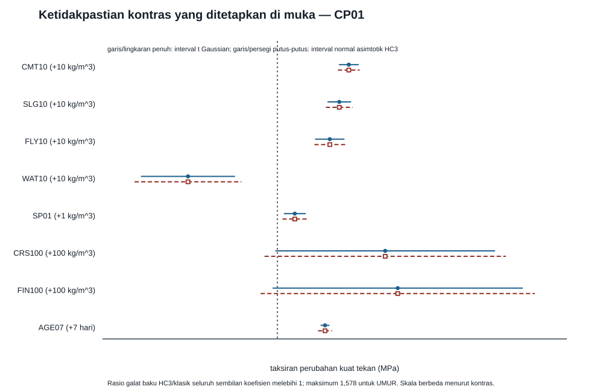
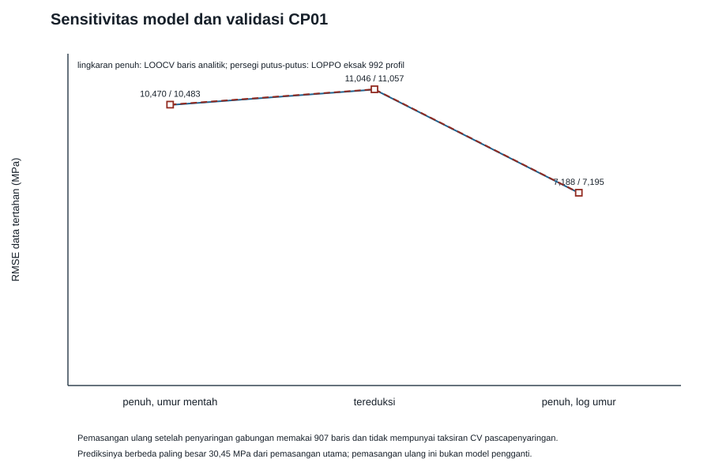
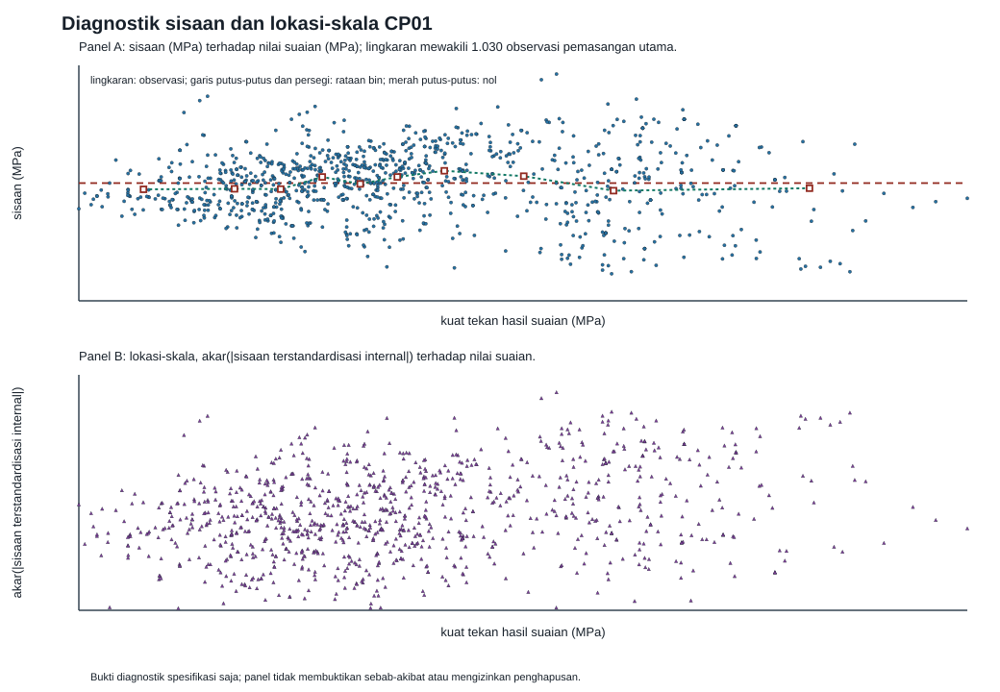
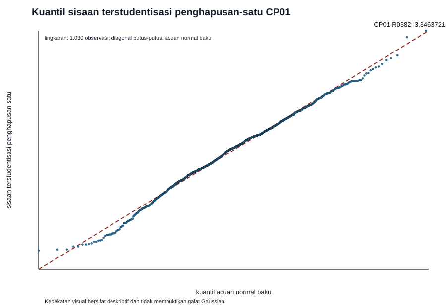
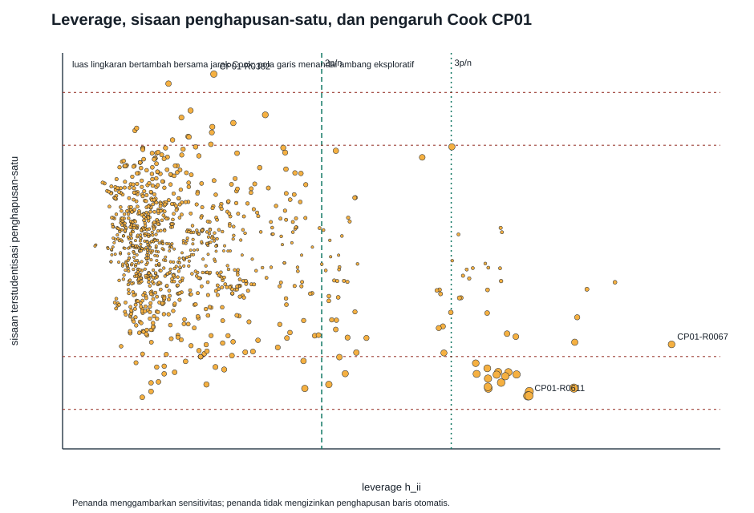

Proyek akhir integratif CP01 — regresi data terbuka untuk kuat tekan beton
Proyek akhir ini memakai data UCI Concrete Compressive Strength yang telah ditetapkan sebelumnya. Anda menerima paket luring yang berisi byte mentah beku, kamus atau skema, bukti hak primer, dan manifes provenans. Anda tidak diminta mencari versi lain di internet. Seluruh analisis harus berawal dari byte lokal yang identitasnya dinyatakan pada kartu data berikut.
| Medan kartu data | Nilai yang dibekukan sebelum perakitan akhir |
|---|---|
| Judul kandidat | UCI Concrete Compressive Strength |
| Nama berkas mentah | components/c140-companion/data/capstones/CP01/raw/data.csv |
| URL kanonis tingkat-aset | https://archive.ics.uci.edu/static/public/165/data.csv |
| Penerbit atau pemelihara | UCI Machine Learning Repository |
| Versi atau tanggal kumpulan data | Tidak ada versi formal; tahun terbit 1998; API UCI last_updated = Sun Feb 11 2024 |
| Waktu pengambilan UTC | 2026-08-30T20:15:19.946Z–2026-08-30T20:15:21.138Z (mulai–selesai) |
| MIME dan pengodean | text/csv (tipe teridentifikasi; respons HTTP tidak mendeklarasikan Content-Type); UTF-8, seluruh byte teks berada dalam subset ASCII 7-bit, tanpa BOM, akhir baris CRLF |
| Ukuran byte mentah | 41472 |
| SHA-256 byte mentah | 8d4b15b6fc68cd932d745cbd663d5ceae66dd54422e99c1e4865f2936ab7e2af |
| Berkas bukti hak dan SHA-256-nya | components/c140-companion/data/capstones/CP01/witnesses/uci-dataset-165-record.html; ed33939f897be461aeb9ac491e68e9eedc1c54b34ceea6977ce6557d204dd296 |
| Status dan dasar hak tingkat-aset | Kumpulan data berlisensi CC BY 4.0: berbagi dan adaptasi diizinkan untuk tujuan apa pun dengan atribusi yang layak, tautan lisensi, dan pemberitahuan perubahan; pertahankan pula pemberitahuan hak cipta I-Cheng Yeh serta sitasi makalah Yeh 1998 dari README. Lisensi kumpulan data tetap terpisah dan tidak dilabeli ulang sebagai CC BY-SA materi pendamping. |
| Berkas skema dan SHA-256-nya | components/c140-companion/data/capstones/CP01/DATASET_PROVENANCE.json; 08cd61239545c65900eabc0912cc01181314134d8c59afe2b11c5a026cd33fa0 |
| Jumlah baris dan kolom yang diharapkan | 1030; 9 |
| Pemetaan kolom, definisi, dan satuan | Cement → cement_kg_per_m3 (massa semen, kg/m³); Blast Furnace Slag → blast_furnace_slag_kg_per_m3 (massa terak, kg/m³); Fly Ash → fly_ash_kg_per_m3 (massa abu terbang, kg/m³); Water → water_kg_per_m3 (massa air, kg/m³); Superplasticizer → superplasticizer_kg_per_m3 (massa superplasticizer, kg/m³); Coarse Aggregate → coarse_aggregate_kg_per_m3 (massa agregat kasar, kg/m³); Fine Aggregate → fine_aggregate_kg_per_m3 (massa agregat halus, kg/m³); Age → age_days (umur saat pengukuran, hari); Concrete compressive strength → compressive_strength_mpa (respons kuat tekan, MPa). |
Nilai pada kartu ini telah diikat ke rekaman dan bukti tingkat-aset beku yang dipasok pekerja data khusus. Status dokumen lengkap karena angka hasil model, tabel, gambar, dan kesimpulan telah disusun dari keluaran deterministik yang lulus manifes dan rekaman verifikasi; tidak ada angka yang disalin manual. Lisensi CC BY-SA 4.0 pada metadata pembuka hanya meliputi materi pendamping orisinal ini; lisensi dan kewajiban atribusi kumpulan data tetap dinyatakan terpisah.
Masalah tunggal — audit data, proyeksi linear, prediksi, dan diagnostik (100 poin)
Gunakan simbol kanonis yang dipetakan secara eksplisit dari skema beku: \(Y\) untuk kuat tekan beton; \(C\) untuk semen; \(S\) untuk terak tanur tinggi; \(F\) untuk abu terbang; \(W\) untuk air; \(P\) untuk superplasticizer; \(G_c\) dan \(G_f\) untuk agregat kasar dan halus; serta \(A\) untuk umur. Nama kolom, definisi operasional, dan satuan persis harus mengikuti skema, bukan ingatan atau tebakan. Bila skema akhir memakai istilah lain, pemetaan simbol ini tetap dicatat satu-ke-satu.
Model utama yang ditetapkan sebelum melihat hasil adalah model aditif penuh
dengan vektor desain
Model pembanding bersarang menghapus blok \(S,F,P\), tetapi mempertahankan intersep dan semua kovariat lain:
Kedua model adalah proyeksi linear asosiasional. Model tersebut bukan hukum mekanistik beton dan bukan model kausal. Semua keputusan model, ambang diagnostik, dan analisis sensitivitas di bawah harus ditulis di dalam skrip sebelum hasilnya dicetak; model tidak boleh dipilih ulang agar cocok dengan hasil yang disukai.
A. Hak, provenans, dan identitas byte — 15 poin.
- Verifikasi SHA-256 dan ukuran byte berkas mentah sebelum penguraian. Cocokkan keduanya dengan kartu data; ketidakcocokan harus menghentikan reproduksi secara gagal dengan aman, bukan sekadar menghasilkan peringatan.
- Rekonstruksi rantai provenans dari URL kanonis, penerbit, versi atau tanggal, waktu pengambilan, MIME, pengodean, nama berkas, dan bukti hak primer yang disertakan. Jangan melakukan permintaan jaringan.
- Buat tabel keputusan yang membedakan izin mengunduh, menganalisis, membuat turunan, dan meredistribusikan byte. Setiap keputusan harus menunjuk berkas bukti yang disertakan; jangan menyimpulkan izin dari nama UCI saja.
- Nyatakan secara eksplisit bahwa lisensi kumpulan data dan lisensi materi pendamping merupakan dua lapisan hak yang berbeda. Catat juga apakah paket memuat pengenal langsung, unit observasi sensitif, atau risiko reidentifikasi yang masuk akal berdasarkan skema dan bukti yang tersedia.
B. Pertanyaan, populasi, estimand, dan fungsi kerugian — 10 poin.
- Rumuskan populasi target dengan mengacu pada proses pengumpulan, rentang bahan, umur, dan kondisi yang benar-benar tercakup oleh sumber. Pernyataan “semua beton” tidak dapat diterima tanpa dukungan. Bedakan unit observasi, unit target prediksi, dan kemungkinan pengulangan resep yang sama.
- Rumuskan dua pertanyaan utama: (i) seberapa baik aturan regresi aditif memprediksi \(Y\) untuk observasi baru yang dapat dipertukarkan dengan populasi operasional; dan (ii) apakah blok \(S,F,P\) menambah informasi prediktif linear setelah \(C,W,G_c,G_f,A\) dikendalikan, tanpa menafsirkan koefisien sebagai efek intervensi.
- Dengan \(P_\star\) sebagai hukum populasi target, definisikan estimand
Nyatakan kondisi momen dan ketunggalan yang diperlukan. Jika matriks momen singular, target koefisien tidak boleh disebut unik; gunakan fungsi proyeksi unik atau kontras yang terestimasi. Definisikan \(\gamma^\star=(\beta_S^\star,\beta_F^\star,\beta_P^\star)^{\mathsf T}\) dan hipotesis asosiasional \(H_0:\gamma^\star=0\). 4. Untuk algoritme OLS \(a\in\{\mathrm{full},\mathrm{red}\}\) yang dilatih pada \(n-1\) observasi, definisikan risiko prediksi
Nilai \(\Delta^{(n-1)}>0\) memihak model penuh. Fungsi kerugian utama adalah galat kuadrat; RMSE dilaporkan dalam satuan \(Y\), dan galat absolut rata-rata dipakai sebagai pembanding sensitivitas. Jelaskan syarat pertukaran yang membuat prosedur tinggalkan satu relevan bagi risiko ini.
C. Pemasukan dan pembersihan data deterministik — 10 poin.
- Penguraian harus memakai pemisah, pengodean, tanda desimal, baris tajuk, dan pemetaan kolom yang dinyatakan skema. Simpan nomor baris sumber sebelum transformasi apa pun.
- Tegakkan pemeriksaan atas hash mentah, dimensi, urutan dan nama kolom, tipe numerik, nilai hilang, nilai tak hingga, serta batas yang memang diberikan kamus data. Jangan membuat batas domain baru dari hasil sampel.
- Laporkan baris duplikat persis dan kelompok dengan vektor prediktor sama. Jangan menghapus, merata-ratakan, atau memilih duplikat tanpa aturan substantif yang sudah dinyatakan. Respons tidak boleh dipakai untuk menentukan kelompok validasi.
- Tulis CSV bersih UTF-8 dengan LF, urutan kolom kanonis, dan presisi numerik yang terdokumentasi. Buat manifes dapat dibaca mesin yang memuat jumlah baris/kolom, jumlah nilai hilang/tak berhingga/duplikat, min–maks per kolom, ukuran byte, dan SHA-256 CSV bersih. Reproduksi kedua dari byte mentah harus menghasilkan byte CSV dan manifes yang identik.
D. Derivasi dan analisis utama — 20 poin.
- Bentuk \(X_{\mathrm{full}},X_{\mathrm{red}},y\) dari seluruh baris yang lulus pemeriksaan. Laporkan \(n\), peringkat kedua matriks, dimensi ruang kolom, nilai singular, dan suatu ukuran kondisi numerik yang definisinya dinyatakan. Jangan menghitung \((X^{\mathsf T}X)^{-1}\) secara eksplisit untuk pemasangan numerik.
- Turunkan persamaan normal dari minimisasi \(\lVert y-Xb\rVert^2\), lalu hubungkan solusi dengan proyektor \(P_X\), nilai suaian, sisaan, dan SSE. Pasang model dengan QR berpivot atau SVD. Bila peringkat tidak penuh, bedakan ketidakunikan koefisien dari keunikan nilai suaian dan audit keterestimasi blok yang hendak diuji.
- Untuk \(M_{\mathrm{full}}\), laporkan koefisien dalam satuan asli, perubahan nilai suaian untuk kenaikan satu satuan kovariat dengan kovariat lain tetap, SSE, sisaan, galat baku, dan \(R^2\). Interpretasi “kovariat lain tetap” harus dibatasi pada kombinasi bahan yang memiliki dukungan data.
- Turunkan statistik uji model bersarang dari selisih SSE dan selisih peringkat,
Uji \(H_0:\gamma^\star=0\), sebutkan syarat untuk hukum \(F\) eksak, dan jangan menyamakan penolakan hipotesis dengan bukti kausal atau arti praktis.
E. Ketidakpastian dan model pembanding — 15 poin.
- Hitung galat baku dan interval 95% klasik serta HC3 untuk koefisien model penuh. Bandingkan uji \(F\) klasik terhadap uji Wald HC3 untuk blok \(S,F,P\). Nyatakan dengan tepat bagian yang eksak di bawah model Gaussian homoskedastik dan bagian yang hanya kekar secara asimtotik.
- Untuk setiap model, gunakan identitas penghapusan satu
untuk menghitung PRESS, LOOCV-MSE, LOOCV-RMSE, dan LOOCV-MAE. Laporkan (\widehat\Delta_{\mathrm{LOO}} =\mathrm{LOOCV\mbox{-}MSE}{\mathrm{red}} -\mathrm{LOOCV\mbox{-}MSE}{\mathrm{full}}). Verifikasi bahwa \(1-h_{ii}\) berada di atas toleransi, lalu cocokkan nilai PRESS berbasis identitas terhadap pemasangan ulang penghapusan satu langsung. Selisih maksimum prediksi harus paling besar \(10^{-9}\max(1,\max_i|y_i|)\) untuk kedua model. 3. Pilih tiga baris desain hanya dari \(X_{\mathrm{full}}\): leverage minimum, leverage median, dan leverage maksimum, dengan nomor baris sumber sebagai pemutus seri. Pada ketiganya, laporkan interval 95% untuk rerata respons dan interval prediksi 95% untuk observasi baru. Jelaskan sumber perbedaan lebarnya dan jangan mengklaim cakupan eksak bila asumsi distribusinya gagal. 4. Pisahkan kecocokan dalam sampel, ketidakpastian koefisien, ketidakpastian rataan, ketidakpastian prediksi individual, dan risiko prediksi. Satu angka \(R^2\) tidak boleh menggantikan kelima objek tersebut.
F. Diagnostik dan sensitivitas — 15 poin.
- Buat grafik sisaan terhadap nilai suaian, lokasi terhadap skala, Q–Q sisaan, serta leverage terhadap sisaan terstudentisasi. Tunjukkan bagaimana pola yang terlihat berkaitan dengan linearitas, varians konstan, ekor distribusi, dan pengaruh; grafik tidak boleh dipakai sebagai uji biner tanpa argumen.
- Hitung \(h_{ii}\), sisaan terstudentisasi, dan jarak Cook. Laporkan lima nilai terbesar beserta nomor baris sumber. Gunakan \(h_{ii}>2r_{\mathrm{full}}/n\) dan \(D_i>4/n\) hanya sebagai saringan investigasi, bukan aturan penghapusan.
- Ulangi model penuh setelah mengeluarkan, hanya untuk sensitivitas, gabungan baris yang melewati kedua saringan. Bandingkan koefisien blok \(S,F,P\), kesimpulan uji, dan prediksi; hasil ini tidak boleh mengganti analisis utama dan semua baris tetap ada pada data bersih.
- Setelah menegaskan dari skema bahwa umur dinyatakan dalam hari dan \(A>0\), ganti kolom umur \(A\) dengan \(\log\{A/(28\ \mathrm{hari})\}\). Dibandingkan model utama berumur mentah, ini adalah perubahan ruang kolom, bukan sekadar perubahan satuan. Pasang ulang model, periksa ulang peringkat, dan bandingkan sisaan, leverage, pengondisian numerik, serta LOOCV. Jelaskan pula bahwa mengganti 28 hari dengan konstanta positif lain hanya menggeser intersep karena model memuat intersep.
- Bila ada beberapa baris dengan vektor prediktor identik, lakukan sensitivitas dengan mengeluarkan satu profil prediktor agar semua baris dengan resep identik disisihkan bersama-sama. Bandingkan dengan LOOCV baris demi baris dan jelaskan potensi optimisme akibat kebocoran replikasi. Bila semua profil unik, catat bahwa pemeriksaan ini mereduksi ke LOOCV biasa.
G. Reproduksi luring dan keluaran statis aksesibel — 10 poin.
Serahkan satu direktori mandiri yang sedikitnya memuat:
- naskah pembaca CP01 ini dengan pertanyaan, estimand, asumsi, derivasi, hasil, diagnostik, sensitivitas, keterbatasan, dan kesimpulan;
data/capstones/CP01/transform_cp01.pydancapstones/run_cp01_analysis.py, beserta lingkungan eksekusi yang dicatat persis dalamCP01_REPLAY_RECEIPT.json;data/capstones/CP01/clean/concrete_compressive_strength.csv,DATASET_PROVENANCE.json,SHA256SUMS,ROW_MANIFEST.csv,COLUMN_MANIFEST.csv, danTRANSFORM_LEDGER.json;- tabel dapat dibaca mesin untuk koefisien, interval, uji blok, metrik LOOCV, observasi berpengaruh, dan hasil sensitivitas;
- grafik SVG statis dengan judul, deskripsi, label sumbu beserta satuan, legenda yang dapat dibedakan tanpa warna, serta ALT_TEXT.md yang menyatakan pola dan angka penting tanpa hanya berkata “grafik menunjukkan hasil”.
Skrip harus menolak jaringan, tidak memerlukan peramban, tidak membaca berkas di luar paket, dan gagal bila masukan atau pemeriksaan berbeda. Jalankan ulang dua kali di direktori keluaran baru dan buktikan bahwa daftar berkas, ukuran byte, serta SHA-256 keluaran yang dinyatakan deterministik adalah identik. Keluaran yang memang memuat timestamp harus dipisahkan dari artefak deterministik dan tidak boleh memengaruhi analisis.
H. Kesimpulan terkalibrasi — 5 poin.
Jawab kedua pertanyaan utama dengan ukuran efek, ketidakpastian, dan metrik prediksi yang relevan. Bedakan apa yang diketahui tentang sampel beku, apa yang bergantung pada asumsi populasi atau model, dan apa yang tidak dapat disimpulkan. Bahas dukungan kovariat, ketergantungan antar-bahan, kemungkinan heteroskedastisitas, observasi berpengaruh, replikasi resep, dan batas generalisasi. Kesimpulan tidak boleh memakai bahasa sebab-akibat, mengklaim keunggulan praktis hanya dari nilai-p, atau menutupi sensitivitas yang substantif.
Petunjuk 1 — bekukan bukti, target, dan desain sebelum menghitung
Mulailah dari byte lokal, bukan dari tabel yang sedang ditampilkan situs web. Pisahkan empat objek berikut: bukti hak tingkat-aset, byte CSV yang menjadi masukan analisis, XLS/README yang hanya menjadi saksi provenans dan presisi, serta CSV bersih yang dihasilkan transformasi. CSV dan XLS tidak boleh dinyatakan identik secara byte atau identik secara numerik: catat relasi pembulatan yang dibuktikan oleh transformasi dan pertahankan kedua hash.
Sebelum memasang model, tulis unit observasi dan populasi operasional hipotetis yang terbatas pada dukungan data UCI; sumber tidak mendokumentasikan kerangka pengambilan sampel eksternal. Nyatakan pula respons, delapan prediktor, dan fungsi kerugian. Untuk model penuh gunakan
dengan umur mentah \(A\), sedangkan model tereduksi menghapus \((S,F,P)\). Tetapkan
Keduanya adalah target proyeksi/asosiasi, bukan efek kausal. Transformasi \(\log\{A/(28\text{ hari})\}\) mengubah ruang kolom dan hanya boleh muncul sebagai analisis sensitivitas yang sudah dinamai, bukan sebagai penggantian diam-diam terhadap model utama.
Petunjuk 2 — turunkan identitas, lalu pakai keluaran untuk memeriksanya
Untuk setiap model \(M\in\{F,R\}\), turunkan
Gunakan selisih peringkat, bukan jumlah nama kolom, untuk derajat bebas uji model bersarang. Untuk pembandingan prediksi, identitas PRESS memberi prediksi penghapusan satu tanpa memasang ulang secara stokastik:
Bandingkan model melalui (\widehat\Delta_k=\widehat R_{R,k}^{\mathrm{LOO}}- \widehat R_{F,k}^{\mathrm{LOO}}); nilai positif memihak model penuh untuk fungsi kerugian ke-\(k\). Setelah itu baru periksa hukum penyampelan klasik, interval Bonferroni/Scheffé, HC3, leverage, jarak Cook, pemasangan ulang saringan gabungan, bentuk umur alternatif, dan validitas interpolasi. Diagnostik menamai mekanisme kegagalan; ia tidak membuktikan model benar dan tidak memerintahkan penghapusan baris.
Jawaban singkat
Ringkasan ini dibangun dari keluaran yang terikat manifes dan rekaman verifikasi CP01.
- Masukan kanonis memuat 1,030 baris, sembilan variabel, nol nilai hilang, dan 992 profil delapan prediktor unik. Model penuh berperingkat 9 dengan 1.021 derajat bebas sisaan.
- Model penuh memberi RSS 110413,15316, \(s=10,39914\) MPa, dan \(R^2=0,61552\). Model tereduksi memberi RSS 123782,47881, \(s=10,99460\) MPa, dan \(R^2=0,56897\).
- Untuk blok terak–abu terbang–superplasticizer, \(F(3,1021)=41,20910\) dengan \(p=3,8599 × 10^{-25}\); Wald HC3 memberi \(W=89,67344\) dan \(p=2,5745 × 10^{-19}\). Ini mendukung informasi linear kondisional, bukan efek kausal.
- LOOCV-RMSE model penuh ialah 10,46952 MPa, dibanding 11,04624 MPa untuk model tereduksi. Model umur logaritmik memberi 7,18849 MPa; spesifikasi umur mentah karenanya tidak stabil.
- Saringan gabungan memuat 123 baris. Karena saringan Cook bergantung pada respons, statistik \(F\) dan nilai-\(p\) pemasangan ulang hanyalah ringkasan nominal pascaseleksi, bukan keputusan inferensial baru.
- Profil median marginal bukan baris teramati dan berada di luar selubung cembung. Intervalnya adalah ekstrapolasi berbasis model, bukan validasi resep yang didukung data.
Solusi lengkap
Hak, provenans, privasi, dan identitas byte
Bukti primer harus dibaca pada tingkat aset, bukan disimpulkan dari reputasi penerbit atau lisensi materi pendamping. Catatan yang dapat diterima menamai penerbit, URL kanonis, DOI/ID, versi atau tanggal kumpulan data, waktu pengambilan, label hak, teks/URL bukti primer, dan ruang izin untuk mengunduh, mendistribusikan ulang, serta membuat analisis turunan. Lisensi materi CP01 tetap CC BY-SA 4.0; itu tidak mengubah hak kumpulan data.
Manifes membekukan nama, MIME/pengodean, ukuran, dan SHA-256 untuk CSV kanonis, XLS, README/bukti hak, CSV bersih, dan setiap manifes turunan. Masukan analisis adalah CSV lokal yang dipublikasikan UCI. XLS dipertahankan sebagai saksi bahwa sumber lain menyimpan presisi lebih tinggi. Karena perbandingan posisional menunjukkan relasi pembulatan, solusi yang benar mencatat jumlah sel berbeda serta selisih maksimum per kelompok kolom dari buku besar; ia tidak mengklaim dua aset sama. Memilih XLS secara diam-diam akan mengganti estimand data berhingga dan semua hasil numerik, sedangkan mengunduh ulang URL pada reproduksi akan mengganti identitas byte yang sedang dinilai.
Setiap baris hanya memuat komposisi, umur, dan hasil uji beton yang diperlukan oleh analisis. Pemeriksaan skema harus memastikan tidak ada pengenal langsung atau medan sensitif; ketiadaan medan tersebut dicatat, bukan diasumsikan dari nama kumpulan data. Bila bukti hak tingkat-aset gagal, kumpulan data tidak diterima. Bila hash atau byte gagal, transformasi tidak berjalan. Keduanya adalah kegagalan operasional deterministik, bukan alasan untuk menebak metadata.
Byte mentah dan rekaman identitas. Masukan analisis adalah
data/capstones/CP01/raw/data.csv; identitas byte, waktu pengambilan, dan
rantai asetnya dibekukan dalam DATASET_PROVENANCE.json dan
SHA256SUMS.
Bukti hak primer. Saksi lokal
witnesses/uci-dataset-165-record.html, naskah hukum CC BY 4.0, README arsip,
dan rekaman transaksi membentuk dasar keputusan hak; reputasi penerbit saja
bukan bukti izin.
Skema dan manifes sumber. Kamus variabel, unit, struktur, serta relasi
CSV–XLS dibaca dari data/capstones/CP01/DATASET_PROVENANCE.json; XLS dan
README tetap saksi, bukan masukan pengganti.
| Tindakan | Keputusan tingkat-aset | Syarat dan batas |
|---|---|---|
| Mengunduh dan menyimpan rekaman beku | Diizinkan oleh CC BY 4.0 | Pertahankan identitas aset dan atribusi |
| Menganalisis | Diizinkan | Nyatakan perubahan, metode, dan batas klaim |
| Membuat turunan | Diizinkan | Bedakan turunan materi pendamping dari byte sumber |
| Meredistribusikan | Diizinkan | Sertakan atribusi, tautan lisensi, dan pemberitahuan perubahan |
| Memeriksa privasi | Skema tidak memuat pengenal orang | Jangan menyimpulkan ketiadaan risiko di luar medan yang tersedia |
Bukti tingkat-aset dan rantai provenans
CP01 memakai Concrete Compressive Strength karya I-Cheng Yeh, UCI Machine Learning Repository, ID UCI 165 dan DOI 10.24432/C5PK67. Rekaman beku ini tidak mengarang nomor versi: API UCI hanya memberi last_updated = Sun Feb 11 2024, sedangkan metadata DOI tidak memberi versi formal. Karena itu, identitas rekaman dikunci oleh URL sumber, waktu pengambilan UTC, jumlah byte, dan SHA-256 di data/capstones/CP01/DATASET_PROVENANCE.json serta data/capstones/CP01/SHA256SUMS.
Masukan analisis kanonis adalah byte persis data/capstones/CP01/raw/data.csv: 41.472 byte, 1.030 baris data × 9 kolom, UTF-8 tanpa BOM (seluruh karakter berada dalam subset ASCII), akhir baris CRLF, dan SHA-256 8d4b15b6fc68cd932d745cbd663d5ceae66dd54422e99c1e4865f2936ab7e2af. Respons HTTP UCI tidak mendeklarasikan MIME, set karakter, panjang konten, nama berkas, atau pengodean konten untuk CSV ini; identifikasi text/csv berasal dari URL dan validasi penguraian atas byte yang disimpan, bukan dari tajuk server.
Arsip asli UCI juga dibekukan byte demi byte sebagai saksi pembanding: raw/concrete+compressive+strength.zip berukuran 34.444 byte dengan SHA-256 dad85d14de8aee4e07479daa774e6b569a313715b71a3b92c95a07cf91c2c9a7. Isinya adalah Concrete_Data.xls (124.928 byte; SHA-256 710076c66b9ca3f8050e7942f3dcbdbe04013534daeb0077ffd3079a52d8e0c4) dan Concrete_Readme.txt (3.808 byte; SHA-256 5cd3cdb31d3cfd68287daa6b22ed0541d6932113e83ee0980ced63641af3441d). Buku kerja dan README bukan ketergantungan pengurai untuk reproduksi luring; keduanya mempertahankan bentuk asli, tajuk bersatuan, kamus, dan pemberitahuan hak.
CSV UCI adalah representasi generatif yang dibulatkan, bukan salinan numerik identik dari XLS. Pemeriksaan posisi-ke-posisi atas seluruh 1.030 × 9 sel menemukan 2.260 nilai yang berbeda sebelum pembulatan, tetapi nol perbedaan setelah menerapkan aturan yang teramati: tujuh kolom bahan dibulatkan ke satu desimal, umur tetap bilangan bulat, dan kuat tekan dibulatkan ke dua desimal, semuanya dengan ikatan titik tengah yang dibulatkan menjauhi nol. Selisih absolut maksimum terhadap XLS adalah 0,05 kg/m³ pada sebagian besar bahan (0,04 untuk agregat kasar), nol hari untuk umur, dan 0,00498796 MPa untuk kuat tekan. CP01 sengaja mengunci CSV sebagai masukan analisis, sementara ZIP/XLS/README berfungsi sebagai saksi provenans dan pemeriksaan pembulatan.
Halaman rekaman UCI yang dibekukan menyatakan bahwa kumpulan data ini berlisensi Creative Commons Attribution 4.0 International (CC BY 4.0) dan menautkan naskah hukum https://creativecommons.org/licenses/by/4.0/legalcode. README dalam arsip menambahkan pemberitahuan lama: pemakaian ulang tidak dibatasi selama pemberitahuan hak cipta I-Cheng Yeh dan rujukan makalah 1998 yang disebutkan di sana tetap dipertahankan. Atribusi minimum yang harus ikut adalah: “Yeh, I. (1998). Concrete Compressive Strength [Dataset]. UCI Machine Learning Repository. https://doi.org/10.24432/C5PK67.” Untuk adaptasi, sertakan tautan CC BY 4.0 dan nyatakan perubahan yang dibuat.
Lisensi aset data tetap CC BY 4.0. Memasukkan byte kumpulan data atau turunannya ke dalam materi pendamping tidak mengubahnya menjadi CC BY-SA dan tidak memberi hak untuk melabelinya sebagai karya pendamping CC BY-SA. Lisensi materi pendamping hanya berlaku pada materi orisinal yang memang tercakup olehnya; berkas data, metadata sumber, README, dan saksi hak tetap membawa status serta kewajiban atribusi masing-masing.
Jejak primer yang disimpan mencakup halaman rekaman UCI, respons API UCI, resolusi DOI beserta metadata CSL hasil negosiasi konten, naskah hukum CC BY 4.0, dan tajuk HTTP setiap transaksi. DOI terurai ke rekaman kanonis UCI /dataset/165/concrete+compressive+strength. Tampilan halaman menulis tanggal donasi 2 Agustus 2007, sedangkan metadata tertanam dan README menulis 3 Agustus 2007; perbedaan satu hari ini dicatat sebagai perbedaan penyajian/zona waktu, bukan sebagai bukti versi lain.
Atribusi dan pemisahan lisensi
Data sumber CP01 adalah Concrete Compressive Strength karya I-Cheng Yeh, diterbitkan oleh UCI Machine Learning Repository sebagai kumpulan data UCI 165 dengan DOI 10.24432/C5PK67. Gunakan sitasi kumpulan data berikut dan pertahankan DOI-nya:
Yeh, I. (1998). Concrete Compressive Strength [Dataset]. UCI Machine Learning Repository. https://doi.org/10.24432/C5PK67.
Rekaman UCI menyatakan kumpulan data ini berlisensi Creative Commons Attribution 4.0 International (CC BY 4.0). Karena itu, penggunaan ulang harus memberi kredit yang layak, menautkan lisensi, dan menyatakan perubahan. Rekaman mentah UCI disimpan tanpa perubahan byte; materi pendamping kemudian menerjemahkan penjelasan ke bahasa Indonesia, menormalkan label pada tabel turunan, menambahkan provenans, serta menghasilkan analisis, visualisasi, dan interpretasi. Semua tindakan tersebut adalah perubahan oleh penyusun materi pendamping, bukan keluaran atau pernyataan UCI maupun I-Cheng Yeh. Pembulatan yang membedakan CSV UCI dari buku kerja XLS asli sudah terdapat pada representasi CSV yang diterbitkan UCI; pembulatan itu bukan perubahan yang dibuat oleh materi pendamping.
README asli di dalam arsip UCI juga meminta agar pemberitahuan hak cipta I-Cheng Yeh dan rujukan makalah 1998 berikut tetap dipertahankan. Kewajiban ini dipenuhi bersama atribusi kumpulan data di atas:
Yeh, I.-C. (1998). “Modeling of strength of high-performance concrete using artificial neural networks.” Cement and Concrete Research, 28(12), 1797–1808. https://doi.org/10.1016/S0008-8846(98)00165-3.
Lisensi data tetap CC BY 4.0. Pernyataan CC BY-SA pada materi pendamping hanya mencakup teks, ilustrasi, atau materi orisinal materi pendamping yang memang dimiliki dan dilisensikan demikian; pernyataan itu tidak mengganti, memperluas, atau menyerap lisensi kumpulan data. Byte sumber, metadata UCI, README, serta tabel turunan yang merepresentasikan data tetap harus ditandai dan diatribusikan sebagai materi CC BY 4.0, bukan dilabeli ulang sebagai CC BY-SA.
Tidak ada nomor versi formal yang diberikan oleh bukti beku. API UCI mencatat last_updated sebagai Sun Feb 11 2024, sedangkan metadata DOI melalui layanan negosiasi konten DataCite/Crosscite menyatakan tahun terbit 1998 tetapi tidak menyediakan versi formal. Halaman UCI menampilkan tanggal donasi 2 Agustus 2007, sementara metadata tertanam dan README asli menyatakan 3 Agustus 2007. Perbedaan tahun/tanggal tersebut menggambarkan fungsi metadata yang berbeda dan perbedaan penyajian tanggal; perbedaan itu tidak diperlakukan sebagai beberapa versi kumpulan data. Rekaman yang benar untuk mereproduksi CP01 adalah rekaman beku yang diikat oleh URL pengambilan, waktu UTC, jumlah byte, dan SHA-256 dalam data/capstones/CP01/DATASET_PROVENANCE.json.
Atribusi hanya mengidentifikasi sumber dan lisensi. Penyebutan I-Cheng Yeh, UCI Machine Learning Repository, DataCite/Crosscite, DOI, atau Creative Commons tidak menyiratkan sponsor, persetujuan, sertifikasi, atau dukungan mereka terhadap materi pendamping, pilihan pengolahan data, model, visualisasi, interpretasi, maupun kesimpulan CP01.
Pertanyaan, populasi, estimand, dan fungsi kerugian
Unit analisis adalah satu baris campuran/umur dengan satu respons kuat tekan dalam MPa. Sumber tidak mendokumentasikan kerangka penyampelan yang menghubungkan 1.030 baris dengan populasi eksternal tertentu. Karena itu, populasi operasional yang dipakai untuk pertanyaan prediksi hanyalah distribusi hipotetis observasi campuran, umur, dan hasil uji baru yang dapat dipertukarkan dengan data latih serta tetap berada dalam dukungan kovariat yang diamati. Cakupan tidak otomatis meluas ke resep, proses perawatan, laboratorium, atau rentang umur di luar dukungan data.
Ada dua pertanyaan terhubung.
- Seberapa baik model penuh dan model tereduksi memprediksi kuat tekan untuk observasi baru dari populasi operasional di bawah kerugian kuadrat? Kerugian absolut menjadi sensitivitas terhadap ekor.
- Setelah prediktor lain pada model penuh ditahan tetap, apakah blok terak, abu terbang, dan superplasticizer menambah informasi prediktif linear? Ini dinilai sebagai asosiasi kondisional dan sebagai selisih ruang proyeksi, bukan intervensi bahan.
Target superpopulasi model penuh ialah koefisien proyeksi
Target koefisien ini tunggal bila \(E(Y^2)<\infty\), \(E(\lVert x_F\rVert^2)<\infty\), dan matriks momen \(Q_F=E(x_Fx_F^{\mathsf T})\) positif definit. Jika \(Q_F\) singular, koordinat koefisien tidak tunggal; yang tetap dapat menjadi tunggal hanyalah fungsi proyeksi dan kontras yang terestimasi pada ruang baris \(Q_F\).
Blok \(\gamma^*\) mengisolasi tiga arah yang hilang dari model tereduksi. Untuk data latih \(D_{\mathrm{tr}}\), target pembandingan prediksi bersyarat adalah
LOOCV memberi penduga deterministik \(\widehat\Delta_2\); versi kerugian absolut memberi \(\widehat\Delta_1\). Hubungannya dengan risiko pelatihan berukuran \(n-1\) memerlukan pasangan observasi dan observasi baru yang i.i.d. dari \(P_\star\), atau sedikitnya dapat dipertukarkan bersama, serta algoritme pelatihan yang invarian terhadap permutasi baris. Dependensi kelompok produksi atau pengulangan profil dapat menggagalkan interpretasi itu dan memotivasi LOPPO. Nilai positif berarti model penuh mempunyai kerugian lebih kecil pada skema penyampelan ulang tersebut. Nilai yang dekat nol atau tanda yang berubah pada sensitivitas harus dilaporkan sebagai ketidakstabilan, bukan dipaksa menjadi pemenang.
Koefisien bahan menanyakan perubahan proyeksi saat prediktor lain tetap. Karena komponen resep saling membatasi dan desain observasional, perubahan "satu bahan dengan yang lain tetap" dapat tidak merepresentasikan resep yang dapat dibuat. Kontras dua profil di dalam dukungan lebih mudah diberi interpretasi, tetapi tetap asosiasional.
| Objek | Definisi operasional dalam CP01 |
|---|---|
| Unit observasi | Satu hasil uji kuat tekan bagi satu campuran pada umur tercatat |
| Populasi operasional | Observasi campuran, umur, dan hasil uji baru yang secara hipotetis dapat dipertukarkan dengan data latih, terbatas pada dukungan yang diamati; tidak ada kerangka penyampelan eksternal yang terdokumentasi |
| Estimand koefisien | Proyeksi linear kuadrat terkecil \(\beta_F^\star\), bukan efek intervensi |
| Estimand blok | \(\gamma^\star=(\beta_S^\star,\beta_F^\star,\beta_P^\star)^{\mathsf T}\) |
| Target prediksi | Risiko OLS pada observasi baru untuk model penuh dan tereduksi |
| Fungsi kerugian | Galat kuadrat sebagai kerugian utama; galat absolut sebagai pembanding sensitivitas |
Pemasukan dan pembersihan data secara deterministik
Transformasi membaca hanya CSV mentah lokal dengan hash terverifikasi,
dengan aturan pemisah, tajuk, desimal, pengodean, dan urutan kolom yang
dibekukan. Sembilan kolom kanonis adalah
cement_kg_per_m3, blast_furnace_slag_kg_per_m3,
fly_ash_kg_per_m3, water_kg_per_m3,
superplasticizer_kg_per_m3, coarse_aggregate_kg_per_m3,
fine_aggregate_kg_per_m3, age_days, dan
compressive_strength_mpa.
Setiap untaian harus lolos penguraian numerik ketat, bernilai hingga, sesuai
satuan/domain, dan memenuhi pemeriksaan skema. Transformasi menambahkan obs_id stabil menurut urutan
sumber, tetapi tidak mengimputasi, membulatkan ulang, mengonversi satuan,
menghapus pencilan, menghapus duplikat, atau mengurutkan ulang baris. Profil
prediktor yang berulang dicatat sebagai kelompok dan dipertahankan; duplikasi
tidak identik dengan kesalahan data.
CSV bersih ditulis dengan serialisasi desimal kanonis. ROW_MANIFEST.csv
mengikat obs_id ke baris sumber; COLUMN_MANIFEST.csv mengikat nama, satuan,
tipe, dan aturan domain; buku besar mencatat setiap operasi; manifes akhir
mencatat baris, kolom, nilai hilang, nilai tak berhingga, rentang, dan hash. XLS dan
CSV dibandingkan secara posisional hanya sebagai pemeriksaan provenans dan
pembulatan. Menuntut kesamaan eksak akan gagal karena presisinya berbeda;
menjadikan XLS masukan analisis akan gagal karena model yang dinilai telah
dibekukan pada CSV.
data/capstones/CP01/clean/concrete_compressive_strength.csv. Artefak analitis ini hanya boleh dimaterialisasi oleh
transformasi deterministik setelah pemeriksaan byte, skema, domain, dan
urutan baris lulus.
DATASET_PROVENANCE.json. Manifes ini adalah otoritas fakta rekaman beku,
aset saksi, hak, skema, dan pemetaan kolom.
ROW_MANIFEST.csv, COLUMN_MANIFEST.csv, dan TRANSFORM_LEDGER.json. Manifes keluaran mengikat dimensi, nilai hilang,
nilai nonhingga, duplikasi, rentang, byte, dan SHA-256 CSV bersih.
| Pemeriksaan pemasukan data | Nilai | Status |
|---|---|---|
| Baris | 1,030 | lulus |
| Kolom | 9 | lulus |
| Nilai hilang | 0 | lulus |
| Peringkat desain penuh | 9 | lulus |
| df sisaan | 1021 | lulus |
| Profil prediktor unik | 992 | lulus |
| Nilai awal acak | null |
deterministik |
Kontrak pemasukan data terperinci
Unit observasi adalah satu hasil uji kuat tekan untuk satu campuran beton pada umur uji tertentu. Baris bukan orang, tetapi beberapa baris dapat merupakan ulangan campuran dan umur yang sama. Karena itu kemunculan ulang harus diinventarisasi, bukan dihapus. Respons ialah kuat tekan beton dalam MPa; delapan prediktor dasarnya ialah tujuh massa komponen per meter kubik dan umur beton dalam hari.
Aset kanonis dan aturan byte mentah
Masukan numerik kanonis untuk analisis adalah CSV terbitan UCI
data/capstones/CP01/raw/data.csv, 41.472 byte, SHA-256
8d4b15b6fc68cd932d745cbd663d5ceae66dd54422e99c1e4865f2936ab7e2af.
Tiga byte mentah lain adalah saksi provenans dan perbandingan, bukan sumber
angka yang boleh dicampurkan ke tabel analisis:
| aset | byte | SHA-256 | fungsi |
|---|---|---|---|
raw/concrete+compressive+strength.zip |
34.444 | dad85d14de8aee4e07479daa774e6b569a313715b71a3b92c95a07cf91c2c9a7 |
arsip asli UCI |
raw/archive/Concrete_Data.xls |
124.928 | 710076c66b9ca3f8050e7942f3dcbdbe04013534daeb0077ffd3079a52d8e0c4 |
saksi angka berpresisi lebih tinggi dan tajuk berunit |
raw/archive/Concrete_Readme.txt |
3.808 | 5cd3cdb31d3cfd68287daa6b22ed0541d6932113e83ee0980ced63641af3441d |
kamus asli |
Seluruh isi data/capstones/CP01/raw/ tidak boleh diubah. Transformasi hanya
membuka aset itu untuk dibaca; ia tidak menormalkan akhir baris, menyimpan ulang
buku kerja, menimpa hasil ekstraksi, atau menambahkan metadata ke byte mentah.
Ukuran dan hash dihitung sebelum penguraian dan dihitung lagi setelah seluruh
keluaran selesai. Ketidaksamaan satu byte pun menggagalkan transformasi.
Seluruh keluaran mula-mula ditulis ke direktori sementara dan baru dipindahkan
ke data/capstones/CP01/clean/ setelah semua pemeriksaan lulus.
Pemilihan CSV sebagai masukan kanonis disengaja dan harus tampak dalam
TRANSFORM_LEDGER.json. Perbandingan beku terhadap Sheet1 pada XLS sudah
membuktikan, untuk seluruh matriks \(1030\times9\), bahwa CSV mempertahankan
urutan baris dan kolom serta memakai pembulatan titik tengah menjauhi nol:
dengan \(w_{ij}\) nilai XLS, \(c_{ij}\) nilai CSV, dan \(Q_d\) pembulatan ke \(d\) angka desimal. Tidak ada ketidakcocokan setelah aturan ini diterapkan. Sebelum pembulatan, banyak sel yang berbeda menurut kolom adalah \((205,55,230,230,300,40,170,0,1030)\), total 2.260 sel. Selisih absolut maksimum adalah 0,05 untuk kolom massa selain agregat kasar, 0,04 untuk agregat kasar, 0 untuk umur, dan kurang dari 0,005 MPa untuk respons. Dengan demikian estimand numerik CP01 didefinisikan pada angka CSV yang dipublikasikan; analisis tidak boleh mengambil sebagian kolom dari XLS atau mengaku memulihkan presisi yang telah dibulatkan. Reproduksi rutin tidak memerlukan pengurai XLS: ia memverifikasi hash saksi dan catatan perbandingan yang sudah dibekukan, lalu mentransformasi CSV kanonis secara luring.
Skema sumber dan skema bersih
CSV harus didekode sebagai UTF-8 tanpa BOM atau byte NUL, memakai koma sebagai pemisah, titik sebagai tanda desimal, dan satu rekaman tajuk tanpa komentar atau kaki. Akhir baris mentah dipertahankan untuk identitas byte, tetapi pengurai menerima CRLF atau LF. Spasi putih di tepi token tidak dipangkas diam-diam. Tajuk, urutan, peran, tipe semantik, dan unit yang diterima tepat sebagai berikut.
| Posisi | Tajuk CSV mentah | Nama bersih | Peran | Tipe analisis | Unit dan domain |
|---|---|---|---|---|---|
| 1 | Cement |
cement_kg_per_m3 |
prediktor | float64 | kg/m³, \(x\ge0\) |
| 2 | Blast Furnace Slag |
blast_furnace_slag_kg_per_m3 |
prediktor | float64 | kg/m³, \(x\ge0\) |
| 3 | Fly Ash |
fly_ash_kg_per_m3 |
prediktor | float64 | kg/m³, \(x\ge0\) |
| 4 | Water |
water_kg_per_m3 |
prediktor | float64 | kg/m³, \(x\ge0\) |
| 5 | Superplasticizer |
superplasticizer_kg_per_m3 |
prediktor | float64 | kg/m³, \(x\ge0\) |
| 6 | Coarse Aggregate |
coarse_aggregate_kg_per_m3 |
prediktor | float64 | kg/m³, \(x\ge0\) |
| 7 | Fine Aggregate |
fine_aggregate_kg_per_m3 |
prediktor | float64 | kg/m³, \(x\ge0\) |
| 8 | Age |
age_days |
prediktor | int64 | hari, \(x\in\mathbb Z_{>0}\) |
| 9 | Concrete compressive strength |
compressive_strength_mpa |
respons | float64 | MPa, \(y>0\) |
Skema kerasnya adalah tepat 1.030 rekaman data dan sembilan kolom tersebut, tanpa kolom indeks terselubung, tajuk berulang, atau nama tambahan. Tujuh kolom massa harus bernilai kelipatan 0,1 kg/m³, umur harus bulat, dan respons harus bernilai kelipatan 0,01 MPa. Total tujuh massa harus positif pada setiap baris. Unit tidak dikonversi. Nama unit dimasukkan ke nama kolom bersih agar kolom dengan skala berbeda tidak dapat tertukar tanpa menggagalkan skema.
Penguraian dan transformasi
Urutan transformasi dibekukan sebagai berikut.
- Verifikasi nama relatif, ukuran, dan SHA-256 keempat aset. Masukan berupa jalur lokal; URL, unduhan, tembolok jaringan, dan jalur cadangan ke aset lain ditolak.
- Urai seluruh medan CSV sebagai untaian lebih dahulu. Token numerik harus
cocok dengan tata bahasa
^[+-]?(?:[0-9]+(?:\.[0-9]*)?|\.[0-9]+)(?:[eE][+-]?[0-9]+)?$, lalu dibaca sebagai desimal basis sepuluh eksak. Himpunan kode nilai hilang yang diizinkan kosong: medan kosong, spasi putih,NA,N/A,NaN,null,None,?, atau token lain yang tidak numerik adalah kegagalan, bukan kandidat imputasi. - Periksa domain pada tabel kamus, keterhinggaan hasil konversi float64, dan presisi terbitan \(Q_{d_j}(x)=x\). Hitung kehilangan data, gagal urai, tak hingga, dan NaN per kolom; masing-masing harus nol.
- Pertahankan urutan seluruh 1.030 baris. Beri ID stabil
CP01-R0001sampaiCP01-R1030menurut nomor rekaman data sumber; ID disimpan dalam manifes baris, bukan ditambahkan sebagai kovariat. - Ganti tajuk menurut tabel di atas dan tidak melakukan transformasi nilai lain. Khususnya tidak ada imputasi, winsorisasi, pembulatan tambahan, standardisasi di tabel bersih, penghapusan pencilan, penghapusan duplikat, pengacakan, pengurutan ulang, atau seleksi berdasarkan respons.
- Tulis
clean/concrete_compressive_strength.csvsebagai UTF-8 tanpa BOM, koma, LF, dan newline terakhir: kolom massa dengan tepat satu angka desimal,age_dayssebagai bilangan bulat, serta respons dengan tepat dua angka desimal. Cara ini menentukan byte keluaran tanpa bergantung pada lokal atau representasi biner titik-mengambang. - Tulis
clean/ROW_MANIFEST.csv,clean/COLUMN_MANIFEST.csv, danclean/TRANSFORM_LEDGER.jsondengan urutan kunci/rekaman yang tetap. Tidak ada waktu jam dinding, jalur absolut, nilai awal acak, atau metadata komputer yang berubah antarreproduksi.
Kehilangan data, duplikasi, dan identitas baris
Tidak ada baris yang dihapus. Inventaris duplikasi yang harus direproduksi dari CSV kanonis adalah:
- untuk seluruh sembilan kolom, 11 kelompok memuat 36 baris, yaitu 25 kemunculan di luar satu wakil per kelompok; ukuran kelompoknya satu kali 2, enam kali 3, dan empat kali 4;
- untuk delapan prediktor, 19 kelompok memuat 57 baris, yaitu 38 kemunculan tambahan; ukuran kelompoknya lima kali 2, sembilan kali 3, dan lima kali 4;
- dari kelompok prediktor itu, sembilan kelompok yang memuat 24 baris mempunyai lebih dari satu nilai respons berbeda. Kelompok tersebut adalah ulangan campuran/umur, bukan bukti kesalahan yang membolehkan deduplikasi.
ROW_MANIFEST.csv mempunyai tepat 1.030 rekaman dalam urutan sumber dan medan
row_id, source_record, source_line, clean_record,
canonical_row_sha256, full_row_duplicate_group,
predictor_duplicate_group, disposition, dan exclusion_reason.
source_line=source_record+1, clean_record=source_record, seluruh
disposition bernilai kept, dan seluruh exclusion_reason kosong. ID
kelompok duplikat ditentukan oleh ID baris terkecil dalam kelompok, sehingga
tidak bergantung pada urutan hash. canonical_row_sha256 dihitung atas rekaman
data bersih termasuk LF.
COLUMN_MANIFEST.csv mempunyai tepat sembilan rekaman dan medan
source_position, source_name, clean_position, clean_name, role,
definition, semantic_type, unit, missing_codes, transform, domain,
missing_count, nonfinite_count, unique_count, observed_min,
observed_max, dan canonical_column_sha256. Manifes harus menyatakan bahwa
transformasi dasar hanyalah penggantian nama dan serialisasi desimal kanonis;
setiap kolom turunan untuk model kemudian—misalnya pemusatan, penskalaan,
polinomial, log umur, rasio, atau interaksi—harus mempunyai entri tersendiri
dalam manifes desain analisis dan tidak boleh ditulis kembali ke tabel dasar.
Peringkat penuh dan pengondisian
Untuk pemeriksaan ingest, tuliskan matriks prediktor dasar \(Z\in\mathbb R^{1030\times8}\) dalam urutan kolom bersih dan
Pertama, interpretasikan setiap desimal hingga sebagai bilangan rasional dan verifikasi secara eksak bahwa satu minor \(9\times9\) tidak nol; buku besar menyimpan indeks sembilan baris pivot dan determinannya. Ini adalah sertifikat peringkat struktural \(\operatorname{rank}_{\mathbb Q}(X)=9\), bukan kesimpulan dari keberhasilan invers matriks.
Untuk kondisi numerik, hitung untuk setiap prediktor
dengan penjumlahan menurut urutan sumber yang stabil. Wajib \(0<s_j<\infty\) untuk semua \(j\). Bentuk \(X^*=[\mathbf1,Z^*]\), lalu gunakan SVD tipis—bukan invers \(X^{\mathsf T}X\)—dengan nilai singular \(\sigma_1\ge\cdots\ge\sigma_9\). Untuk
pemeriksaan tegasnya ialah \(r_\tau=9\), \(\sigma_9>\tau\), dan \(\kappa_2(X^*)<10^8\). Buku besar juga menyimpan seluruh spektrum, \(\tau\), serta \(\kappa_2(X)\) pada unit asli agar efek skala terlihat. Karena model pemasukan memuat intersep dan peringkat sembilan, derajat bebas sisaan yang diharapkan adalah \(n-r=1030-9=1021>0\). Setiap formula model yang menambah transformasi atau interaksi wajib membekukan urutan kolomnya dan mengulang sertifikat peringkat serta kondisi ini; pseudoinvers tidak boleh dipakai untuk menyamarkan aliasing.
Pemeriksaan keluaran dan reproduksi
Transformasi hanya lulus bila seluruh kondisi berikut benar sekaligus:
- empat identitas aset cocok dengan ukuran dan hash di atas, dan hash sebelum serta sesudah transformasi sama;
- tajuk dan urutan persis, \(n=1030\), jumlah prediktor dasar \(d=8\), dan tabel bersih mempunyai tepat sembilan kolom kanonis;
- nilai hilang, gagal urai, NaN, dan tak hingga semuanya nol; seluruh domain, unit, dan presisi desimal lulus;
- urutan serta multiset baris dipertahankan satu-ke-satu, semua 1.030 ID unik, dan ringkasan duplikasi sama persis dengan inventaris di atas;
- peringkat struktural dan numerik sama dengan 9, df sisaan sama dengan 1.021, semua simpangan baku prediktor positif, dan ambang kondisi lulus;
- nama serta skema keempat keluaran tepat seperti kontrak. Alur kerja tidak menebak nama lama, menerima alias, atau mengubah skema agar pembangunan lewat;
- dua reproduksi luring dari byte mentah yang sama menghasilkan SHA-256 identik
untuk keempat keluaran. Pemasukan data tidak memakai RNG, sehingga tidak ada nilai awal acak;
lokal numerik dibekukan ke
C, urutan selalu menurut sumber, dan pembangunan atau--check-onlytidak pernah mengakses jaringan.
Kegagalan pemeriksaan menghentikan pembuatan keluaran akhir dan menyimpan hanya pesan gagal yang menyebut pemeriksaan deterministiknya. Ia tidak memicu imputasi, penghapusan baris, penggantian aset, atau aturan pembersihan baru. Dengan kontrak ini, tabel bersih tetap merupakan representasi berjejak dari CSV UCI yang dibekukan, sementara pemeriksaan XLS tetap menjadi bukti eksplisit tentang pembulatan sumber dan bukan sumber angka tersembunyi.
Kamus data dan variabel turunan
Tabel analisis CP01 mempunyai tepat 1.030 baris dan sembilan kolom data. Urutan kolom adalah bagian dari kontrak: nama yang mirip, alias singkat, atau kolom indeks tidak boleh diterima sebagai pengganti diam-diam. Unit observasi adalah satu hasil uji kuat tekan untuk satu campuran beton pada umur uji yang tercatat. Kumpulan data tidak memuat pengenal orang.
Sembilan kolom kanonis
| Urutan | Tajuk UCI | Nama bersih kanonis | Simbol | Peran | Definisi operasional | Unit; tipe |
|---|---|---|---|---|---|---|
| 1 | Cement |
cement_kg_per_m3 |
\(C\) | prediktor | massa semen dalam satu meter kubik campuran | kg/m³; desimal/float64 |
| 2 | Blast Furnace Slag |
blast_furnace_slag_kg_per_m3 |
\(S\) | prediktor | massa terak tanur tinggi dalam satu meter kubik campuran | kg/m³; desimal/float64 |
| 3 | Fly Ash |
fly_ash_kg_per_m3 |
\(F\) | prediktor | massa abu terbang dalam satu meter kubik campuran | kg/m³; desimal/float64 |
| 4 | Water |
water_kg_per_m3 |
\(W\) | prediktor | massa air dalam satu meter kubik campuran | kg/m³; desimal/float64 |
| 5 | Superplasticizer |
superplasticizer_kg_per_m3 |
\(P\) | prediktor | massa superplasticizer dalam satu meter kubik campuran | kg/m³; desimal/float64 |
| 6 | Coarse Aggregate |
coarse_aggregate_kg_per_m3 |
\(G_c\) | prediktor | massa agregat kasar dalam satu meter kubik campuran | kg/m³; desimal/float64 |
| 7 | Fine Aggregate |
fine_aggregate_kg_per_m3 |
\(G_f\) | prediktor | massa agregat halus dalam satu meter kubik campuran | kg/m³; desimal/float64 |
| 8 | Age |
age_days |
\(A\) | prediktor | umur beton ketika kuat tekan diuji | hari; int64 positif |
| 9 | Concrete compressive strength |
compressive_strength_mpa |
\(Y\) | respons | kuat tekan yang diukur pada umur \(A\) | MPa; desimal/float64 positif |
Tujuh massa dipublikasikan pada ketelitian satu angka desimal, umur sebagai
bilangan bulat, dan respons pada dua angka desimal. Ketelitian serialisasi ini
bukan pernyataan bahwa alat ukur mempunyai resolusi fisik persis sebesar itu.
Semua massa harus nonnegatif, umur dan respons harus positif, dan jumlah tujuh
massa harus positif. Nilai 0.0 pada terak, abu terbang, atau superplasticizer
berarti komponen itu tidak digunakan dalam resep; nol tersebut adalah nilai
observasi yang sah, bukan nilai hilang.
Tidak ada kode nilai hilang yang diizinkan dan hitungannya dibekukan
pada nol untuk kesembilan kolom. Medan kosong, spasi putih, NA, N/A, NaN,
null, None, ?, \(+\infty\), atau \(-\infty\) bukan sinonim untuk nol dan
harus menggagalkan pemasukan data. Tidak ada imputasi, penggantian nol, winsorisasi,
atau penghapusan pencilan pada tabel bersih.
Identitas baris, urutan, dan duplikasi
Setiap rekaman data ke-\(i\), dihitung berbasis satu setelah tajuk CSV, mendapat ID
Jadi ID pertama adalah CP01-R0001, ID terakhir CP01-R1030,
source_record=i, dan source_line=i+1. ID mengikuti urutan byte sumber,
bukan urutan nilai, hasil sortir, atau hash. Ia disimpan di
ROW_MANIFEST.csv, tidak ditambahkan sebagai prediktor dan tidak berubah
ketika sebuah baris ditinggalkan dari satu pemasangan sensitivitas.
Dua pengertian duplikasi dibedakan secara eksplisit.
- Duplikat baris penuh berarti kesembilan token kanonis, termasuk respons, sama. Ada 11 kelompok yang memuat 36 baris: satu kelompok berukuran 2, enam berukuran 3, dan empat berukuran 4. Jadi ada 25 kemunculan di luar satu wakil per kelompok dan 1.005 baris penuh unik.
- Profil prediktor berulang berarti delapan prediktor sama, tanpa mensyaratkan respons sama. Ada 19 profil berulang yang memuat 57 baris: lima kelompok berukuran 2, sembilan berukuran 3, dan lima berukuran 4. Jadi ada 38 kemunculan tambahan dan tepat 992 profil prediktor unik. Dari 19 kelompok itu, sembilan kelompok yang memuat 24 baris mempunyai lebih dari satu nilai respons.
Semua 1.030 baris dipertahankan. Baris penuh yang sama dapat merupakan ulangan
uji yang tidak dapat dibedakan dari tabel, sedangkan profil sama dengan respons
berbeda jelas membawa variasi ulangan. Karena tidak tersedia pengenal
eksperimen tambahan, deduplikasi akan mengubah bobot empiris tanpa dasar.
full_row_duplicate_group dan predictor_duplicate_group memakai ID baris
terkecil dalam kelompok sebagai penanda stabil; medan kelompok kosong bagi
baris yang tidak berulang.
Untuk keperluan validasi, setiap baris—termasuk profil tunggal—juga mendapat
dengan kesamaan \(u_j=u_i\) dinilai pada kedelapan token prediktor bersih secara eksak dan dalam urutan kanonis. Definisi ini menghasilkan 992 ID profil dan tidak bergantung pada urutan iterasi tabel hash.
Kamus rancangan utama dan pembanding bersarang
Kolom intercept bukan kolom data; nilainya satu untuk setiap baris dan
unitnya tak berdimensi. Rancangan utama yang telah ditetapkan adalah
dengan urutan implementasi tepat
intercept, cement_kg_per_m3, blast_furnace_slag_kg_per_m3,
fly_ash_kg_per_m3, water_kg_per_m3,
superplasticizer_kg_per_m3, coarse_aggregate_kg_per_m3,
fine_aggregate_kg_per_m3, age_days.
Rancangan ini memakai semua 1.030 baris, mempunyai sembilan kolom dan peringkat
sembilan pada data beku. Respons selalu compressive_strength_mpa dan tidak
pernah menjadi bagian matriks \(X\). Model pembanding bersarang adalah
yakni urutan intercept, cement_kg_per_m3, water_kg_per_m3,
coarse_aggregate_kg_per_m3, fine_aggregate_kg_per_m3, age_days.
Ia menghapus blok \(S,F,P\) secara serentak dan mempunyai enam kolom.
M_red adalah pembanding inferensial yang bersarang dalam M_full, bukan salah
satu dari tiga sensitivitas di bawah.
Standardisasi untuk memeriksa kondisi numerik memakai nama
condition_z_<nama_prediktor> dan rumus
Kolom tersebut hanya dipakai untuk SVD/pengondisian. Ia bukan kovariat model, tidak ditulis ke CSV bersih, dan tidak membentuk model sensitivitas tambahan.
Sensitivitas 1: pemasangan ulang setelah saringan pengaruh gabungan
Semua besaran saringan dihitung dari M_full pada seluruh 1.030 baris. Kamus
variabel turunannya adalah:
| Nama stabil | Definisi | Unit/peran |
|---|---|---|
fitted_mpa |
\(\widehat Y_i=(H Y)_i\), dengan \(H=X_{\mathrm{full}}(X_{\mathrm{full}}^{\mathsf T}X_{\mathrm{full}})^{-1}X_{\mathrm{full}}^{\mathsf T}\) secara matematis dan QR/SVD secara komputasional | MPa; nilai suaian primer |
residual_mpa |
\(e_i=Y_i-\widehat Y_i\) | MPa; sisaan primer |
residual_scale_mpa |
\(s=\sqrt{\sum_i e_i^2/(1030-9)}\) | MPa; skala sisaan primer |
leverage |
\(h_{ii}=H_{ii}\) | tak berdimensi; konfigurasi desain |
internal_standardized_residual |
\(e_i/[s\sqrt{1-h_{ii}}]\) | tak berdimensi; sisaan berskala |
cook_distance |
\(D_i=\{e_i^2/(9s^2)\}\,h_{ii}/(1-h_{ii})^2\) | tak berdimensi; sensitivitas nilai suaian |
flag_high_leverage |
\(\mathbf1\{h_{ii}>2(9)/1030\}=\mathbf1\{h_{ii}>18/1030\}\) | Boolean; saringan, bukan keputusan hapus |
flag_high_cook |
\(\mathbf1\{D_i>4/1030\}\) | Boolean; saringan, bukan keputusan hapus |
flag_influence_union |
flag_high_leverage OR flag_high_cook |
Boolean; gabungan dua saringan |
included_in_influence_refit |
NOT flag_influence_union |
Boolean; himpunan baris pemasangan sensitivitas |
Rancangan sensitivitas ini memakai urutan sembilan kolom M_full tanpa
perubahan, tetapi pemasangan dilakukan pada baris dengan
included_in_influence_refit=true. Gabungan berarti baris yang melewati salah
satu saringan ditinggalkan; bukan hanya irisan dua saringan. Baris tersebut tetap
ada dalam CSV bersih, manifes, pemasangan utama, dan seluruh ringkasan data. Ambang
adalah saringan deterministik untuk perbandingan koefisien/prediksi, bukan bukti
bahwa observasi salah.
Sensitivitas 2: bentuk rerata log-umur
Karena age_days positif pada seluruh baris, definisikan
log_age_28d tak berdimensi, memakai logaritma natural, bernilai nol tepat pada
28 hari, dan dihitung tanpa membulatkan hasil. Rancangan sensitivitas memakai
seluruh 1.030 baris dan urutan
intercept, cement_kg_per_m3, blast_furnace_slag_kg_per_m3,
fly_ash_kg_per_m3, water_kg_per_m3,
superplasticizer_kg_per_m3, coarse_aggregate_kg_per_m3,
fine_aggregate_kg_per_m3, log_age_28d.
Jadi log_age_28d menggantikan age_days; keduanya tidak dimasukkan sekaligus.
Peringkat dan kondisi matriks sembilan kolom ini diperiksa ulang. Mengganti 28 hari
dengan konstanta acuan positif lain hanya menggeser koordinat intersep karena
intersep ada, tetapi mengganti umur mentah dengan log-umur mengubah ruang kolom
dan karena itu benar-benar merupakan sensitivitas bentuk rataan. age_days
tetap dipertahankan dalam tabel bersih sebagai sumber derivasi.
Sensitivitas 3: validasi dengan mengeluarkan satu profil prediktor
LOOCV biasa dan prosedur mengeluarkan satu profil prediktor (LOPPO) memakai model
sembilan kolom M_full yang sama; yang berubah hanyalah pembentukan lipatan.
| Nama stabil | Definisi | Unit/peran |
|---|---|---|
loocv_fold_id |
sama dengan row_id; ada 1.030 lipatan |
ID validasi baris |
predictor_profile_id |
ID profil delapan prediktor eksak yang didefinisikan di atas; ada 992 lipatan | ID validasi kelompok |
loocv_prediction_mpa |
prediksi baris \(i\) dari pemasangan yang meninggalkan hanya baris \(i\) | MPa |
loocv_error_mpa |
\(Y_i-\texttt{loocv_prediction_mpa}\) | MPa |
loppo_prediction_mpa |
prediksi baris \(i\) dari pemasangan yang meninggalkan semua baris dengan predictor_profile_id yang sama |
MPa |
loppo_error_mpa |
\(Y_i-\texttt{loppo_prediction_mpa}\) | MPa |
loocv_squared_error_mpa2 |
loocv_error_mpa² |
MPa²; kontribusi kerugian kuadrat |
loppo_squared_error_mpa2 |
loppo_error_mpa² |
MPa²; kontribusi kerugian kuadrat |
loocv_absolute_error_mpa |
\(|\texttt{loocv_error_mpa}|\) | MPa; sensitivitas kerugian absolut |
loppo_absolute_error_mpa |
\(|\texttt{loppo_error_mpa}|\) | MPa; sensitivitas kerugian absolut |
Untuk LOOCV linear, identitas
boleh dipakai setelah memverifikasi \(h_{ii}<1\). LOPPO harus meninggalkan seluruh kelompok profil bersama-sama dan memeriksa ulang peringkat setiap matriks latihan; ia tidak boleh dihitung dengan meninggalkan satu wakil lalu membiarkan replikat identik di data latihan. RMSE dan MAE kedua prosedur dirata-ratakan atas 1.030 prediksi baris, sehingga perbedaannya mengukur konsekuensi kebocoran profil dengan target kerugian yang sama. Tidak ada deduplikasi sebelum pembentukan lipatan.
Selain log_age_28d, penanda pengaruh, besaran diagnostik, dan pengenal lipatan di
atas, kontrak tidak membuat rasio bahan, polinomial, jumlah bahan suplemen,
atau interaksi. Menambahkan variabel seperti itu akan mendefinisikan model baru
di luar rancangan primer dan tiga sensitivitas yang telah dibekukan.
Derivasi matriks dan analisis utama
Dengan \(y\) sebagai kuat tekan dan urutan kolom yang dibekukan, definisikan
Peringkat struktural dan numerik harus dihitung sebelum invers dipakai. Bila \(r_F\) sama dengan jumlah kolom model penuh, persamaan normal mempunyai solusi tunggal
Pemeriksaan wajib adalah \(X_F^{\mathsf T}e_F=0\), \(H_F^{\mathsf T}=H_F\), \(H_F^2=H_F\), dan \(\operatorname{tr}(H_F)=r_F\). Intersep memberi identitas ANOVA terpusat
dengan df \(n-1=(r_F-1)+(n-r_F)\). Ini adalah identitas proyeksi; normalitas tidak diperlukan. OLS juga tidak memerlukan Gaussian. Gaussian diperlukan untuk menyebut OLS sebagai MLE koefisien dan untuk hukum \(t/F\) eksak; Gauss–Markov memerlukan rataan benar dan kovarians sferis, bukan normalitas.
Model tereduksi bersarang karena setiap kolomnya berada di \(\mathcal C(X_F)\). Definisikan \(q=r_F-r_R\), bukan "tiga" hanya karena tiga nama dihapus. Untuk \(H_0:\gamma=0\),
Di bawah model Gaussian sferis dan \(H_0\), statistik itu mengikuti \(F_{q,n-r_F}\). Selisih SSE juga harus sama dengan \(y^{\mathsf T}(H_F-H_R)y\); matriks \(H_F-H_R\) harus merupakan proyektor berperingkat \(q\). Kegagalan penyarangan atau peringkat mengubah pembilang dan df, sehingga label uji "parsial" dari perangkat lunak saja tidak cukup.
Tabel utama melaporkan semua koefisien pada satuan asli, nilai suaian, sisaan, SSE, \(s^2=\operatorname{SSE}_F/(n-r_F)\), serta efek berskala yang ditetapkan sebelum melihat hasil: perubahan 10 kg/m³ bagi semen, terak, abu terbang, dan air; 1 kg/m³ bagi superplasticizer; 100 kg/m³ bagi agregat kasar atau halus; serta 7 hari bagi umur. Setiap efek berarti perubahan proyeksi dengan kolom lain tetap. Besarnya tidak boleh dibandingkan lintas prediktor sebelum skala/satuannya disamakan, dan tanda koefisien bukan bukti mekanisme kausal.
Untuk model \(M\), identitas penghapusan satu
memberi MSE-LOO dan MAE-LOO pada jawaban ringkas. Tidak ada nilai awal acak atau pembagian acak. Ini membandingkan algoritme pemasangan pada \(n-1\) baris dan menilai prediksi di lokasi prediktor yang diamati; ia bukan jaminan ekstrapolasi atau validasi laboratorium eksternal.
| Model | \(n\) | \(p\) | Peringkat | df | RSS | \(s\) (MPa) | \(R^2\) | \(R^2_{adj}\) | \(\kappa_2\) terskala |
|---|---|---|---|---|---|---|---|---|---|
| FULL_ADDITIVE_RAW | 1030 | 9 | 9 | 1021 | 110413,15316 | 10,39914 | 0,61552 | 0,61251 | 8,71178 |
| REDUCED_NO_SLG_FLY_SP | 1030 | 6 | 6 | 1024 | 123782,47881 | 10,99460 | 0,56897 | 0,56686 | 2,22352 |
| Suku | Estimasi | Galat baku klasik | Galat baku HC3 | Rasio |
|---|---|---|---|---|
| INTERCEPT | −23,331214 | 26,585504 | 29,646337 | 1,1151 |
| CEMENT | 0,119804 | 0,008489 | 0,009313 | 1,0970 |
| SLAG | 0,103866 | 0,010136 | 0,011528 | 1,1373 |
| FLY_ASH | 0,087934 | 0,012583 | 0,013140 | 1,0443 |
| WATER | −0,149918 | 0,040177 | 0,045738 | 1,1384 |
| SUPERPLASTICIZER | 0,292225 | 0,093424 | 0,105391 | 1,1281 |
| COARSE_AGGREGATE | 0,018086 | 0,009392 | 0,010327 | 1,0995 |
| FINE_AGGREGATE | 0,020190 | 0,010702 | 0,011736 | 1,0966 |
| AGE | 0,114222 | 0,005427 | 0,008565 | 1,5782 |
| Blok | Selisih RSS | df1 | df2 | \(F\) | Nilai-\(p\) | Wald HC3 | Nilai-\(p\) HC3 |
|---|---|---|---|---|---|---|---|
| \(S,F,P\) | 13369,32566 | 3 | 1021 | 41,20910 | 3,8599 × 10^{-25} | 89,67344 | 2,5745 × 10^{-19} |
Derivasi matriks terperinci
Respons, rancangan utama, dan identitas peringkat
Byte beku raw/data.csv memuat \(n=1030\) baris lengkap. Untuk baris ke-\(i\),
tetapkan respons
dan vektor kovariat
dengan \(C\) = semen, \(S\) = terak tanur tinggi, \(F\) = abu terbang, \(W\) = air, \(P\) = superplasticizer, \(G_c\) = agregat kasar, \(G_f\) = agregat halus, semuanya dalam kg/m\(^3\), dan \(A\) = umur dalam hari. Rancangan aditif utama adalah
Urutan kolom ini harus dibekukan bersama keluaran analisis. Dengan angka desimal CSV dibaca sebagai bilangan rasional basis sepuluh yang eksak, minor \(9\times9\) pada baris data \(1,2,3,4,5,6,7,17,185\) mempunyai determinan
Karena \(X\) hanya mempunyai sembilan kolom, saksi determinan ini membuktikan
Jadi seluruh sembilan koefisien parameterisasi utama teridentifikasi secara aljabar pada byte beku ini. Pernyataan itu tidak mengatakan bahwa semua koefisien diestimasi dengan presisi tinggi, bahwa model rataan benar, atau bahwa perubahannya dapat ditafsirkan secara kausal. Implementasi tetap harus memakai QR atau SVD dan memeriksa nilai singular; membentuk invers secara eksplisit bukan konsekuensi dari bukti peringkat.
Jika kovariat distandardisasi hanya untuk stabilitas atau perbandingan skala, tetapkan \(z_{ij}=(u_{ij}-\bar u_j)/d_j\), dengan setiap \(d_j>0\) dibekukan. Maka
dan \(T\) dapat dibalik. Karena itu
sehingga nilai suaian, sisaan, SSE, peringkat, dan uji ruang model tidak berubah; hanya koordinat koefisien dan satuannya berubah. Sebaliknya, mengganti \(A\) dengan
adalah sensitivitas bentuk rataan yang mengubah ruang kolom relatif terhadap umur mentah. Konstanta 28 hari membuat nol log-umur bermakna pada umur acuan; dengan intersep, mengganti \(a_0\) positif hanya menggeser koordinat intersep dan tidak mengubah ruang model log-umur. Sensitivitas ini harus dipasang, diperiksa peringkatnya, serta dibandingkan ulang sebagai model berbeda dari model utama berumur mentah.
Tiga desain sensitivitas yang dibekukan
Sensitivitas tidak boleh mengganti definisi model utama setelah hasil terlihat. Ketiganya menjawab kerentanan yang berbeda.
- Pemasangan ulang setelah mengeluarkan gabungan titik berpengaruh. Dari model utama semua baris, hitung leverage \(h_{ii}=(P_X)_{ii}\) dan
Sebelum rumus Cook dipakai, reproduksi harus menguji dua pemeriksaan
Peringkat penuh dan \(n>p\) saja tidak membuktikan keduanya untuk realisasi data tertentu. Jika salah satu pemeriksaan gagal, \(D_i\), himpunan \(I\), dan pemasangan ulang sensitivitas ini dinyatakan tidak terdefinisi secara deterministik; cabang itu berhenti tanpa menghasilkan angka dari pembagian \(0/0\). Bekukan
Operatornya adalah gabungan, bukan irisan. Variabel stabilnya “flag_high_leverage”, “flag_high_cook”, dan “flag_influence_union”. Pemasangan ulang memakai pasangan submatriks \((X_{-I},Y_{-I})\) dengan sembilan kolom utama yang sama. Peringkat \(X_{-I}\) dan derajat bebasnya harus dihitung ulang. Jika peringkat turun, hanya fungsi yang memenuhi kriteria keterestimasi pada \(X_{-I}\) yang boleh dibandingkan dengan model utama; pseudoinvers tidak boleh dipakai untuk menyamarkan perubahan target. Karena \(D_i\) bergantung pada \(Y\), pemasangan ulang ini adalah diagnosis sensitivitas pascaseleksi, bukan dasar untuk mengklaim bahwa baris terpilih salah atau bahwa inferensi \(t/F\) pemasangan ulang tetap eksak tanpa penyesuaian. 2. Pemasangan ulang dengan umur logaritmik pada semua baris. Gunakan
setelah pemeriksaan \(A_i>0\) untuk setiap baris. Nama kolom turunan yang stabil adalah “log_age_28d”. Desain ini mempertahankan seluruh 1.030 baris, tetapi mengganti ruang rataan umur mentah; peringkat dan kondisi numeriknya harus dihitung ulang. 3. Validasi dengan mengeluarkan satu profil prediktor identik. Definisikan
dengan kesamaan eksak pada byte bersih, dan bekukan kelasnya sebagai “predictor_profile_id”. Untuk setiap kelas \(g\), latih ulang model utama pada \(X_{-g}\), hitung \(r_{-g}=\operatorname{rank}(X_{-g})\), dan nilai seluruh baris \(Y_g\) yang ditinggalkan bersama. Jika \(r_{-g}<9\), rataan pada profil tertahan \(x_g\) mempunyai prediksi yang invarian terhadap parameterisasi hanya bila
Lipatan yang gagal syarat ini tidak mempunyai prediksi linear yang
teridentifikasi dan tidak boleh diam-diam digabungkan melalui satu pilihan pseudoinvers. Ini adalah keluarga matriks latih untuk penilaian prediksi, bukan satu tabel ANOVA baru. Mengeluarkan satu baris saja dari profil identik akan membocorkan profil yang sama ke data latih.
Tangga asumsi: klaim mana memakai asumsi mana
Seluruh peluang berikut bersyarat pada \(X\) yang telah dibekukan. Tulis
Empat lapisan berikut tidak boleh digabungkan.
- Geometri deterministik. \(X\) dan realisasi \(y\) sudah cukup untuk mendefinisikan proyeksi, OLS, nilai suaian, sisaan, dan dekomposisi jumlah kuadrat. Tidak ada distribusi yang diperlukan.
- Model rataan kondisional. Untuk ketakbiasan koefisien utama, diperlukan
- Model momen sferis. Untuk formula kovarians klasik dan Gauss–Markov, tambahkan
Ini menyatakan varians sama dan kovarians silang nol, tetapi tanpa Gaussianitas belum menyatakan independensi penuh. 4. Model Gaussian eksak. Untuk fungsi kemungkinan Gaussian dan hukum sampel berhingga \(N\), \(\chi^2\), \(t\), serta \(F\), tambahkan
Memperlakukan \(X\) sebagai tetap adalah pilihan inferensi kondisional, bukan klaim bahwa resep beton dipilih melalui randomisasi. Data ini bersifat observasional; koefisien mengukur asosiasi kondisional dalam ruang rataan yang ditetapkan. Interpretasi sebab-akibat memerlukan desain atau asumsi kausal tambahan yang tidak diberikan oleh aljabar regresi.
Peringkat, keterestimasi, dan apa yang tetap unik bila desain diperluas
Untuk menjaga derivasi sah jika analisis sensitivitas menambah kolom, misalkan sementara \(X\in\mathbb R^{n\times p}\) mempunyai peringkat umum \(r\). Ruang rataan dan ruang nolnya adalah
Jika \(r<p\), maka
sehingga koefisien tidak unik walaupun rataan \(X\beta\) unik. Dengan pseudoinvers Moore–Penrose \(X^+\), seluruh solusi kuadrat terkecil adalah
tetapi semuanya memberi nilai suaian yang sama,
Target linear \(a^{\mathsf T}\beta\) terestimasi tepat ketika
Jika syarat ini berlaku, penduganya tidak bergantung pada solusi yang dipilih dan dapat ditulis \(a^{\mathsf T}X^+Y\); lihat Teorema kriteria keterestimasi. Pseudoinvers hanya memilih wakil norma minimum, bukan menciptakan informasi baru.
Contoh kegagalan yang khusus bagi kovariat pada data Concrete: bila kolom
(pengikat total) ditambahkan sambil mempertahankan ketiga kolom penyusunnya, kolom desain menjadi dependen. Pada koordinat \((C,S,F,B)\), arah \((-1,-1,-1,1)^{\mathsf T}\) berada dalam ruang nol. Koefisien \(C,S,F,B\) secara individual lalu bergantung pada kendala parameterisasi; kontras yang ortogonal terhadap arah nol tetap dapat terestimasi. Karena itu setiap perluasan polinomial, interaksi, indikator, atau jumlah komponen harus mengulang pemeriksaan peringkat dan keterestimasi.
Proyeksi, persamaan normal, dan OLS
Definisikan proyektor nilai suaian dan sisaan
Keduanya simetris dan idempoten, dengan
Untuk setiap vektor koefisien \(b\), dekomposisi ortogonal
memberi identitas Pythagoras
Suku pertama tidak bergantung pada \(b\), sedangkan suku kedua minimum nol. Karena itu nilai suaian dan sisaan OLS yang unik adalah
dengan persamaan normal
Jumlah kuadrat sisaan adalah
Pada rancangan utama Concrete, \(r=p=9\), sehingga solusi koefisien tunggal dan secara aljabar dapat ditulis
Formula invers ini adalah identitas derivasi. Komputasi harus menyelesaikan sistem melalui QR/SVD, bukan menghitung \((X^{\mathsf T}X)^{-1}\) secara naif karena pembentukan matriks Gram menguadratkan angka kondisi.
Mengapa OLS sama dengan MLE Gaussian—dan hanya pada lapisan itu
Di bawah model Gaussian eksak, log fungsi kemungkinan kondisional, selain konstanta, adalah
Untuk setiap \(\sigma^2>0\) tetap, memaksimumkan fungsi kemungkinan terhadap \(\beta\) sama dengan meminimumkan SSE. Maka
Setelah \(\beta\) diprofilkan keluar, turunan terhadap \(\sigma^2\) memberi, bila \(\operatorname{SSE}>0\),
Ini berbeda dari penduga momen tak bias
Di bawah rataan benar dan kovarians sferis,
Penyebut \(1030\) berasal dari pemaksimuman fungsi kemungkinan; penyebut \(1021\) berasal dari peringkat ruang sisaan. Jika galat bukan Gaussian, OLS tetap terdefinisi, tetapi tidak otomatis merupakan MLE. Jika SSE nol sementara ruang parameter mensyaratkan \(\sigma^2>0\), fungsi kemungkinan tidak mempunyai maksimum interior; pada model Gaussian utama dengan \(r<n\), peristiwa itu berprobabilitas nol.
Ruang lingkup tepat teorema Gauss–Markov
Andaikan model rataan kondisional dan kovarians sferis benar, tetapi jangan asumsikan Gaussianitas. Dengan
ambil sembarang penduga linear \(\widetilde\beta=AY\) yang tak bias bagi \(\beta\) untuk setiap nilai parameter. Ketakbiasan memaksa \(AX=I_p\). Tulis
Karena \(A_0X=I_p\), diperoleh \(DX=0\) dan
Akibatnya
sehingga
Jadi OLS adalah BLUE: terbaik dalam urutan Loewner hanya di antara penduga yang linear dalam \(Y\) dan tak bias untuk setiap \(\beta\), bersyarat pada \(X\), di bawah kovarians \(\sigma^2I\). Hasil yang sama berlaku bagi target linear \(L\beta\). Teorema ini tidak membandingkan OLS dengan penduga bias atau taklinear, tidak meminimumkan MSE atas semua prosedur, tidak memerlukan normalitas, tidak memberi fungsi kemungkinan, dan tidak membuktikan validitas kausal. Ruang lingkup ini adalah hasil Teorema Gauss–Markov, bukan slogan bahwa OLS selalu “terbaik”.
Kovarians dan hukum Gaussian eksak
Di bawah model rataan kondisional dan kovarians sferis,
serta
Kovarians silang nol hanya memberi ketakkorelasian. Di bawah model Gaussian eksak, barulah transformasi ortogonal bersama menjadi independen dan
Peringkat proyektor, bukan jumlah nama suku, menghasilkan derajat bebas. Inilah alasan matematis bagi penyebut \(1021\), statistik \(t\), dan statistik \(F\) eksak; lihat Hukum eksak nilai suaian, sisaan, dan penduga varians sisaan.
Kontras yang terikat pada pertanyaan data Concrete
Untuk vektor taknol \(c\in\mathbb R^9\) yang ditentukan sebelum melihat \(Y\), target dan penduga kontras adalah
dengan
Di bawah model Gaussian eksak,
Tiga bentuk target harus dibedakan.
- Kemiringan tersesuaikan. Memilih \(c=e_C\), misalnya, menargetkan perubahan rataan linear dalam MPa per tambahan 1 kg/m\(^3\) semen sambil menahan tujuh kovariat lain tetap. Ini parameter asosiasi model. Karena komponen resep mempunyai kendala fisik dan dukungan bersama, perubahan satu komponen saja mungkin bukan intervensi campuran yang dapat dilakukan.
- Selisih dua profil yang dinyatakan. Untuk dua profil desain \(x_a^{\mathsf T}\) dan \(x_b^{\mathsf T}\) yang dipilih di dalam dukungan data,
Bila \(x_a\ne x_b\), ambil \(c=x_a-x_b\). Bentuk kuadratik di atas otomatis memasukkan kovarians antara dua rataan suaian; menghitung dua galat baku seolah independen adalah salah. Bila \(x_a=x_b\), target dan estimasinya identik nol; statistik \(t\) tidak dibentuk karena penyebutnya nol. 3. Hipotesis blok bahan tambahan. Model tereduksi yang dibekukan memakai kolom \((1,C,W,G_c,G_f,A)\), sedangkan model penuh juga memuat \((S,F,P)\). Hipotesis
adalah hipotesis linear \(C_B\beta=0\) dengan peringkat efektif \(q=3\). Ia menilai kontribusi linear gabungan ketiga kovariat setelah kovariat model tereduksi dikondisikan. Penolakan tidak berarti ketiganya masing-masing nonnol dan tidak menyatakan efek kausal bahan.
Untuk target profil di luar rentang atau kombinasi bersama data, formula aljabar tetap dapat dihitung tetapi berubah menjadi ekstrapolasi berbasis model. Kelayakan campuran dan kedekatan pada dukungan desain harus dilaporkan bersama kontras. Jika \(c\) dipilih karena hasilnya tampak besar setelah melihat data, hukum \(t_{1021}\) titik demi titik tidak lagi memberi jaminan pascaseleksi yang diklaim.
ANOVA sebagai dekomposisi proyeksi
Karena \(X\) memuat intersep, definisikan
Ruang konstan adalah subruang \(\mathcal C(X)\), sehingga
adalah penjumlahan dua proyektor ortogonal. Dengan
diperoleh identitas deterministik
serta identitas dimensi khusus model utama
Jadi \(R^2=\operatorname{SSR}/\operatorname{SST}\) sah sebagai proporsi variasi respons terpusat yang dipasang dalam sampel. Ia tidak mengukur akurasi di luar sampel, kebenaran model, atau kausalitas.
Untuk dekomposisi yang selaras dengan perbandingan model CP01, tulis \(P_0\) untuk proyektor model tereduksi
dan \(P_1=P_X\) untuk model penuh, dengan \(r_1=9\). Karena
tiga komponen berikut ortogonal:
Akibatnya
dengan
Secara ekuivalen,
Di bawah model Gaussian penuh dan hipotesis nol bahwa rataan berada dalam \(\mathcal C(X_0)\), statistik parsial
Uji keseluruhan terhadap model intersep saja memakai
di bawah nol Gaussian yang bersesuaian. Identitas jumlah kuadrat dan pengurangan SSE tetap benar tanpa distribusi; hukum \(F\), nilai-p, dan interpretasi sebagai uji eksak tidak. Pada desain tak ortogonal, komponen sekuensial berubah bila urutan blok diubah. Karena itu ruang nol dan penuh di atas, bukan label “tipe I/II/III”, mendefinisikan pertanyaan.
Kondisi pembalik: jika asumsi gagal, apa tepatnya yang berubah
| Kondisi yang dibalik | Konsekuensi matematis | Klaim yang masih boleh dibuat |
|---|---|---|
| Rataan sebenarnya \(\mu\) tidak berada dalam \(\mathcal C(X)\), misalnya hubungan umur atau rasio air–pengikat taklinear | OLS menargetkan proyeksi \(\beta^*=(X^{\mathsf T}X)^{-1}X^{\mathsf T}\mu\), bukan hukum rataan yang benar; sisaan mempunyai rataan \(M_X\mu\) | Nilai suaian tetap proyeksi kuadrat terkecil. Laporkan target proyeksi dan bandingkan bentuk rataan seperti umur logaritmik sebagai sensitivitas |
| Rataan salah tetapi galat sekitar \(\mu\) masih Gaussian sferis | \(\operatorname{SSE}/\sigma^2\sim\chi^2_{n-p}(\lambda)\), dengan \(\lambda=\lVert M_X\mu\rVert^2/\sigma^2\), sehingga \(E(s^2\mid X)=\sigma^2+\lVert M_X\mu\rVert^2/(n-p)\) | Membagi dengan 1021 tidak memperbaiki salah spesifikasi; dekomposisi proyeksi tetap identitas |
| \(E(\varepsilon\mid X)=m\ne0\), termasuk endogenitas atau kovariat penting yang hilang | Bias OLS adalah \((X^{\mathsf T}X)^{-1}X^{\mathsf T}m\) | Galat baku kekar tidak mengubah pusat penduga dan tidak menghapus bias ini |
| Kebenaran memuat kovariat terlewat \(Z\gamma\) | \(E(\widehat\beta_{\mathrm{short}}\mid X,Z)=\beta+(X^{\mathsf T}X)^{-1}X^{\mathsf T}Z\gamma\) | Analisis sensitivitas spesifikasi dapat menunjukkan kerentanan; asosiasi model pendek tidak boleh dinamai efek terkontrol penuh |
| \(\operatorname{Cov}(\varepsilon\mid X)=\Sigma\ne\sigma^2I\) | \(\operatorname{Cov}(\widehat\beta\mid X)=(X^{\mathsf T}X)^{-1}X^{\mathsf T}\Sigma X(X^{\mathsf T}X)^{-1}\); OLS tidak dijamin BLUE; \(P_XY\) dan \(M_XY\) tidak umumnya tak berkorelasi | OLS tetap tak bias bila rataan nol. HC3 dapat menjadi pembanding asimtotik, tetapi bukan pemulihan hukum Gaussian eksak |
| Baris berbagi kelompok produksi, laboratorium, atau protokol sehingga galat dependen | Entri luar diagonal \(\Sigma\) tidak nol; df dan hukum \(t/F\) iid biasa tidak dibenarkan | Nyatakan unit independensi dan gunakan model kovarians/klaster yang sesuai bila identitas klaster tersedia |
| Galat non-Gaussian tetapi rataan nol dan kovarians \(\sigma^2I\) | OLS, ketakbiasan, kovarians klasik, \(s^2\) tak bias, dan Gauss–Markov tetap berlaku; independensi, \(\chi^2\), \(t\), \(F\), dan MLE Gaussian tidak | Labeli inferensi pengganti sebagai asimtotik, bootstrap, atau kekar sesuai syaratnya |
| Kolom baru membuat peringkat \(r<p\) | Koefisien tidak unik; df sisaan \(n-r\); jumlah pembatasan efektif adalah peringkat, bukan jumlah baris \(C\) | Nilai suaian dan sisaan tetap unik; beri inferensi hanya pada fungsi yang terestimasi |
| Intersep dihapus | Identitas tak-terpusat \(\lVert Y\rVert^2=\lVert P_XY\rVert^2+\lVert M_XY\rVert^2\) tetap benar, tetapi \(\operatorname{SST}=\operatorname{SSR}+\operatorname{SSE}\) terpusat dan \(R^2\) standar dapat gagal | Laporkan dekomposisi tak-terpusat dengan label eksplisit; jangan memakai df regresi \(r-1\) |
| Kontras menunjuk resep yang jauh di luar dukungan bersama atau menahan tujuh komponen tetap secara fisik mustahil | Target linear masih terdefinisi dalam model, tetapi merupakan ekstrapolasi/kontrafaktual tanpa dukungan empiris | Batasi klaim pada profil dalam dukungan atau tandai eksplisit asumsi ekstrapolasi dan kelayakan campuran |
| Model, transformasi, atau kontras dipilih setelah melihat \(Y\) | Distribusi nominal \(t/F\) untuk target yang dipilih tidak mengendalikan galat seleksi/multiplikitas | Pisahkan pemilihan dari evaluasi atau gunakan prosedur simultan/selektif yang target galatnya dinyatakan |
Baris tabel pertama dapat ditulis lebih eksplisit. Jika
maka
Jadi bahkan pada model rataan salah, OLS mempunyai target proyeksi yang tepat secara matematis. Yang gagal adalah menyamakan proyeksi linear itu dengan mekanisme bahan, kurva pengerasan beton, atau efek intervensi yang tidak diidentifikasi oleh data.
Pernyataan yang harus direproduksi pada integrasi
Analisis deterministik yang mengiringi CP01 harus membuktikan dari byte lokal, bukan mengetik hasil secara manual, bahwa:
- urutan bersih adalah “cement_kg_per_m3”, “blast_furnace_slag_kg_per_m3”, “fly_ash_kg_per_m3”, “water_kg_per_m3”, “superplasticizer_kg_per_m3”, “coarse_aggregate_kg_per_m3”, “fine_aggregate_kg_per_m3”, “age_days”, lalu “compressive_strength_mpa”, dan urutan desain sama dengan definisi di atas;
- \(n=1030\), \(p=r=9\), dan derajat bebas sisaan \(1021\), termasuk reproduksi rasional eksak atas minor baris data \(1,2,3,4,5,6,7,17,185\) yang menghasilkan determinan \(-470089281375/2\ne0\);
- pada matriks terstandardisasi \(X_{\mathrm{std}}\), peringkat numerik menghitung nilai singular di atas
dengan \(\epsilon_{64}\) didefinisikan sebagai jarak dari 1 ke bilangan IEEE-754 binary64 representabel berikutnya, serta memverifikasi \(\kappa_2(X_{\mathrm{std}})<10^8\); 4. \(X^{\mathsf T}e\) nol sampai toleransi numerik yang dibekukan; 5. nilai suaian dari penyelesaian QR/SVD sama dengan \(P_XY\) sampai toleransi yang dibekukan; 6. \(\sum_i e_i=0\) karena intersep ada; 7. \(\operatorname{SST}=\operatorname{SSR}+\operatorname{SSE}\) dan \(1029=8+1021\); 8. untuk model tereduksi \(r_0=6\), (\operatorname{SSE}_0-\operatorname{SSE}_1 =Y^{\mathsf T}(P_1-P_0)Y), dengan peringkat selisih proyektor 3; 9. galat baku klasik, HC3, dan setiap inferensi sensitivitas diberi label asumsi yang berbeda; dan 10. setiap profil kontras menyimpan kedua vektor \(x_a,x_b\), satuan, kelayakan, serta apakah ia interpolasi atau ekstrapolasi.
Rantai ini menghubungkan geometri Teorema persamaan normal, batas Gauss–Markov Apa yang tidak dikatakan Gauss–Markov, inferensi proyeksi Gaussian Uji F sebagai perbandingan dua ruang model bersarang, dan standar penguasaan Daftar periksa kelulusan tanpa menganggap keluaran perangkat lunak sebagai pengganti argumen matematis.
Ketidakpastian dan model pembanding
Di bawah desain tetap berperingkat penuh dan galat Gaussian sferis,
dan kedua objek independen. Untuk kontras terestimasi \(a^{\mathsf T}\beta_F\),
Karena delapan efek berskala merupakan satu keluarga yang ditetapkan, interval simultan Bonferroni memakai \(t_{1-0.05/(2\cdot8),n-r_F}\), dan nilai-p tersesuaikan adalah \(\min(1,8p_j)\). Interval koefisien 95% titik demi titik harus dilabeli berbeda; memilih hanya koefisien yang menarik lalu memakai interval titik demi titik tidak mempunyai jaminan keluarga tersebut.
Profil rujukan dibangun secara deterministik dari statistik urutan bawah median per prediktor yang didefinisikan manifes. Dengan \(h_0=x_0^{\mathsf T}(X_F^{\mathsf T}X_F)^{-1}x_0\), laporkan tiga objek yang berbeda:
IP lebih lebar karena memuat galat observasi baru. Profil median marginal belum tentu merupakan resep yang benar-benar diamati atau berada dalam selubung cembung; penanda dukungan wajib menyertai interpretasi.
Uji \(F\) blok dan selisih LOOCV menjawab pertanyaan berbeda. Uji \(F\) mengukur bukti terhadap pembatasan linear di bawah hukum Gaussian bersyarat pada \(X\). Selisih LOOCV mengukur kerugian prediksi empiris algoritme penuh dibandingkan dengan algoritme tereduksi. Salah satunya dapat tampak kuat ketika yang lain kecil; perbedaan itu harus dilaporkan, bukan diselaraskan dengan memilih satu metrik setelah melihat hasil.
| ID | Kenaikan | Efek (MPa) | IK klasik 95% | IK HC3 95% | IK HC3 Bonferroni 95% |
|---|---|---|---|---|---|
| CMT10 | 10 kg/m³ | 1,19804 | [1,03146; 1,36462] | [1,01552; 1,38057] | [0,94341; 1,45268] |
| SLG10 | 10 kg/m³ | 1,03866 | [0,83976; 1,23755] | [0,81272; 1,26460] | [0,72345; 1,35387] |
| FLY10 | 10 kg/m³ | 0,87934 | [0,63242; 1,12626] | [0,62180; 1,13689] | [0,52004; 1,23865] |
| WAT10 | 10 kg/m³ | −1,49918 | [−2,28757; −0,71079] | [−2,39563; −0,60274] | [−2,74983; −0,24854] |
| SP01 | 1 kg/m³ | 0,29222 | [0,10890; 0,47555] | [0,08566; 0,49879] | [0,00405; 0,58040] |
| CRS100 | 100 kg/m³ | 1,80862 | [−0,03441; 3,65165] | [−0,21547; 3,83272] | [−1,01522; 4,63246] |
| FIN100 | 100 kg/m³ | 2,01904 | [−0,08095; 4,11902] | [−0,28113; 4,31920] | [−1,18996; 5,22803] |
| AGE07 | 7 hari | 0,79955 | [0,72501; 0,87410] | [0,68204; 0,91707] | [0,63561; 0,96350] |
Enam dari delapan interval keluarga Bonferroni HC3 tidak memuat nol; CRS100 dan FIN100 memuat nol. Batas Scheffé tidak dihitung bagi setiap kontras; batas tersebut hanya tersedia untuk rataan profil rujukan.

| Metode | Model | PRESS | MSE | RMSE | MAE | Peringkat minimum | Nilai awal acak |
|---|---|---|---|---|---|---|---|
| ANALYTIC_LOOCV | FULL_ADDITIVE_RAW | 112899,07992 | 109,61076 | 10,46952 | 8,29601 | 9 | null |
| ANALYTIC_LOOCV | REDUCED_NO_SLG_FLY_SP | 125680,06908 | 122,01948 | 11,04624 | 8,75734 | 6 | null |
| ANALYTIC_LOOCV | FULL_ADDITIVE_LOG_AGE_28 | 53224,57721 | 51,67435 | 7,18849 | 5,55131 | 9 | null |
| EXACT_LOPPO | FULL_ADDITIVE_RAW | 113198,60554 | 109,90156 | 10,48339 | 8,30392 | 9 | null |
| EXACT_LOPPO | REDUCED_NO_SLG_FLY_SP | 125914,02028 | 122,24662 | 11,05652 | 8,76348 | 6 | null |
| EXACT_LOPPO | FULL_ADDITIVE_LOG_AGE_28 | 53324,24760 | 51,77111 | 7,19521 | 5,55642 | 9 | null |
LOPPO memakai 992 lipatan profil eksak. Model penuh berumur mentah sedikit mengungguli model tereduksi pada MSE dan MAE dalam kedua skema. Model umur logaritmik mempunyai fungsi kerugian internal paling kecil, tetapi memakai ruang kolom berbeda.
| Profil | Baris teramati | Dalam selubung cembung | Rataan suaian | \(h_0\) | IK rataan 95% | Pita Scheffé 95% | IP respons baru 95% |
|---|---|---|---|---|---|---|---|
| LOWER_MARGINAL_MEDIANS | false | false | 22,21180 | 0,013150 | [19,87180; 24,55180] | [17,29487; 27,12873] | [1,67194; 42,75166] |
Profil median marginal berada di luar selubung cembung. Intervalnya tetap terdefinisi secara aljabar di bawah model Gaussian linear global, tetapi validitasnya bergantung sepenuhnya pada asumsi ekstrapolasi yang tidak didukung data.
| Pemilih | ID baris | Rekaman | Rataan suaian | \(h_0\) | IK rataan 95% | IP baru 95% |
|---|---|---|---|---|---|---|
| Leverage minimum | CP01-R0986 | 986 | 32,86064 | 0,002186 | [31,90659; 33,81469] | [12,43222; 53,28907] |
| Leverage median bawah | CP01-R0592 | 592 | 18,21768 | 0,006686 | [16,54909; 19,88626] | [−2,25656; 38,69192] |
| Leverage maksimum | CP01-R0067 | 67 | 62,70644 | 0,041075 | [58,57076; 66,84213] | [41,88544; 83,52745] |
Ketiga baris dengan leverage minimum, median bawah, dan maksimum ini memakai interval Gaussian-\(t\) titik demi titik nominal yang dipilih setelah mengurutkan leverage model penuh. Pemilihan memakai \(X\) saja, bukan \(Y\); karena inferensi dikondisikan pada \(X\), ini bukan penyesuaian seleksi berbasis respons. Ketiga interval tetap bukan interval simultan. Label rekaman verifikasinya adalah NOMINAL_POINTWISE_GAUSSIAN_T__POST_SELECTION_BY_FULL_MODEL_LEVERAGE__NOT_SIMULTANEOUS. Interval prediksi lebih lebar karena memuat keragaman satu respons baru. Cakupan nominal juga menuntut model Gaussian bersyarat dan hasil baru yang dapat dipertukarkan dengan baris latih.
Derivasi inferensial terperinci
Bagian ini menyediakan blok masalah, kunci solusi, keluaran mesin, dan bukti penskoran untuk inferensi CP01. Semua klaim eksak di bawah bersifat kondisional pada matriks desain yang diamati dan hanya berlaku untuk model Gaussian aditif utama yang ditetapkan sebelum respons dianalisis. Analisis HC3 adalah pembanding sensitivitas asimtotik; ia tidak menggantikan hukum \(t/F\) sampel berhingga.
Blok yang masuk ke naskah masalah
Model utama, urutan kolom, dan keluarga klaim
Untuk baris beton ke-\(i\), nyatakan kuat tekan \(Y_i\) dalam MPa dan gunakan delapan prediktor dalam unit asli penerbit:
- \(C_i\): semen, kg/m³;
- \(S_i\): terak tanur tinggi, kg/m³;
- \(F_i\): abu terbang, kg/m³;
- \(W_i\): air, kg/m³;
- \(P_i\): superplasticizer, kg/m³;
- \(G_{c,i}\): agregat kasar, kg/m³;
- \(G_{f,i}\): agregat halus, kg/m³; dan
- \(A_i\): umur, hari.
Model utama yang tidak boleh dipilih ulang setelah melihat \(Y\) adalah
atau \(Y=X\beta+\varepsilon\), dengan urutan kolom tetap
Untuk inferensi utama, kondisikan pada \(X\) dan andaikan
Laporkan peringkat yang benar-benar dihitung. Bila peringkat bukan sembilan, hentikan klaim koefisien individual dan jelaskan fungsi linear mana yang masih terestimasi; jangan membiarkan pilihan pseudoinvers perangkat lunak menciptakan identifikasi semu.
Tetapkan \(e_j\in\mathbb R^9\) sebagai vektor basis yang memilih koefisien prediktor \(j\), bukan intersep. Sebelum nilai respons dilihat, bekukan keluarga delapan efek berskala berikut.
| ID stabil | Kontras \(c_j\) | Target \(\Delta_j=c_j^{\mathsf T}\beta\) | Arti dalam unit asli |
|---|---|---|---|
CMT10 |
\(10e_C\) | \(10\beta_C\) | perubahan rataan MPa untuk \(+10\) kg/m³ semen |
SLG10 |
\(10e_S\) | \(10\beta_S\) | perubahan rataan MPa untuk \(+10\) kg/m³ terak tanur tinggi |
FLY10 |
\(10e_F\) | \(10\beta_F\) | perubahan rataan MPa untuk \(+10\) kg/m³ abu terbang |
WAT10 |
\(10e_W\) | \(10\beta_W\) | perubahan rataan MPa untuk \(+10\) kg/m³ air |
SP01 |
\(e_P\) | \(\beta_P\) | perubahan rataan MPa untuk \(+1\) kg/m³ superplasticizer |
CRS100 |
\(100e_{G_c}\) | \(100\beta_{G_c}\) | perubahan rataan MPa untuk \(+100\) kg/m³ agregat kasar |
FIN100 |
\(100e_{G_f}\) | \(100\beta_{G_f}\) | perubahan rataan MPa untuk \(+100\) kg/m³ agregat halus |
AGE07 |
\(7e_A\) | \(7\beta_A\) | perubahan rataan MPa untuk \(+7\) hari umur |
Setiap target menahan tujuh prediktor lain tetap. Itu adalah kontras model, bukan pertukaran bahan bermassa tetap. Uji gabungan utama yang terpisah adalah
Keluarga delapan kontras, uji F gabungan tunggal, dan pita rataan Scheffé di bawah adalah tiga keluarga klaim yang berbeda. Masing-masing memakai taraf \(\alpha=0{,}05\); tidak boleh diklaim bahwa gabungan semua keluaran itu mempunyai satu FWER global 0,05.
Profil rujukan yang ditentukan tanpa memakai respons
Untuk setiap prediktor \(j\), urutkan \(n\) nilai desainnya sebagai \(z_{j,(1)}\le\cdots\le z_{j,(n)}\), tetapkan
dan bentuk
Jadi untuk \(n\) genap dipakai anggota bawah dari dua nilai tengah, bukan rata-ratanya; untuk \(n\) ganjil dipakai nilai tengah biasa. Median dihitung per kolom dari byte bersih yang dibekukan. Profil ini boleh bergantung pada \(X\), tetapi tidak pada \(Y\), karena seluruh inferensi dikondisikan pada \(X\). Laporkan pula apakah \(x_\star\) merupakan baris teramati, berada dalam selubung cembung baris desain, atau hanya gabungan median marginal.
Hasil yang wajib diserahkan
- Tunjukkan \(n\), \(p=9\), peringkat \(X\), bilangan kondisi yang definisinya dinyatakan, RSS, \(\nu=n-9\), dan \(s^2=\operatorname{RSS}/\nu\).
- Berikan tabel seluruh sembilan koefisien berisi estimasi, unit, galat baku Gaussian klasik, \(t\), df, nilai-\(p\) dua sisi, dan interval kepercayaan titik demi titik 95%. Intersep tetap dilaporkan, tetapi jangan diberi interpretasi substantif bila titik semua prediktor nol berada di luar wilayah desain.
- Berikan tabel delapan efek berskala di atas, masing-masing dengan estimasi MPa, galat baku, interval 95% titik demi titik, nilai-\(p\) mentah, interval Bonferroni 95% serentak untuk keluarga, dan nilai-\(p\) Bonferroni.
- Hitung uji F eksak untuk \(H_0:\beta_S=\beta_F=\beta_P=0\) melalui bentuk matriks dan verifikasi dengan selisih RSS model bersarang. Laporkan \(q=3\), \(\nu\), statistik F, dan nilai-\(p\).
- Pada \(x_\star\), laporkan seluruh median asli, \(\widehat m_\star\), \(h_\star\), interval rataan titik demi titik 95%, interval rataan Scheffé 95% untuk seluruh ruang rataan model, dan interval prediksi 95% bagi satu respons baru independen.
- Ulangi galat baku dan keluarga delapan efek dengan HC3 sebagai sensitivitas. Labeli intervalnya Wald dengan pendekatan normal asimtotik, bukan eksak. Bandingkan arah, lebar interval, dan keputusan mencakup nol; jangan memilih kovarians setelah melihat hasil yang paling menguntungkan.
- Tafsirkan setiap efek dalam MPa dan skala perubahan yang ditetapkan. Pisahkan asosiasi model dari sebab-akibat, interpolasi dari ekstrapolasi, serta ketidakpastian rataan dari variasi respons baru.
Kunci solusi dan derivasi yang harus tampak
OLS, varians sisaan, dan hukum koefisien
Dengan \(G=(X^{\mathsf T}X)^{-1}\), solusi OLS dan penduga varians tak bias adalah
Penyebut \(n\) menghasilkan MLE Gaussian \(\widehat\sigma^2_{\rm MLE}\), bukan penduga tak bias yang dipakai untuk membentuk statistik \(t/F\) di sini; lihat Teorema: penduga varians tak bias. Di bawah kontrak Gaussian,
Untuk koefisien \(j\),
dan interval titik demi titik 95% adalah
Untuk efek berskala \(\Delta_j=c_j^{\mathsf T}\beta\), hitung
Interval titik demi titiknya adalah
Karena \(c_j\) hanya menskalakan satu koefisien, statistik \(T_j\) sama dengan statistik \(t\) koefisien itu, tetapi estimasi dan batas intervalnya kini berada dalam MPa untuk perubahan bahan atau umur yang substantif. Keeksakan hukum ini berasal dari normalitas bersama, kovarians \(\sigma^2I_n\), peringkat penuh, dan independensi proyeksi koefisien dari RSS; konsistensi OLS saja tidak cukup Hukum t dan interval kepercayaan bagi satu kontras.
Pengendalian keluarga delapan efek
Dengan \(m=8\), interval Bonferroni dua sisi yang telah ditentukan adalah
Nilai-\(p\) serentak untuk keluarganya dapat dilaporkan sebagai
Tanpa memerlukan independensi antarkontras, peluang bahwa kedelapan interval mencakup targetnya sekaligus sekurangnya 0,95. Delapan interval 95% biasa tidak memiliki jaminan tersebut. Keluarga, skala, dan \(m=8\) tidak boleh diubah setelah tanda atau nilai-\(p\) diketahui Bonferroni, keluarga yang dipilih, dan batas klaim.
Uji F Gaussian eksak untuk terak, abu terbang, dan superplasticizer
Bentuk matriks pembatasan dan ruas kanan
serta
Statistik utama adalah
Sebagai pemeriksaan identitas, cocokkan model tereduksi yang menghapus tepat kolom terak, abu terbang, dan superplasticizer tetapi mempertahankan intersep serta lima prediktor lain. Jika RSS-nya \(\operatorname{RSS}_0\) dan RSS model penuh \(\operatorname{RSS}_1\), maka
Dua cara hitung harus sama sampai toleransi pembulatan yang dinyatakan. Hasil yang menolak nol hanya menyatakan bahwa sedikitnya satu dari tiga koefisien parsial tidak nol dalam model aditif; ia tidak membuktikan ketiganya nonnol, tidak menyatakan efek campuran semen substitusi, dan tidak membuktikan kausalitas Uji F eksak untuk hipotesis linear umum.
Rerata pada profil rujukan dan satu respons baru
Setelah \(x_\star\) dihitung hanya dari \(X\), tetapkan
Interval kepercayaan Gaussian titik demi titik 95% bagi rataan kondisional \(m_\star=x_\star^{\mathsf T}\beta\) adalah
Untuk cakupan simultan 95% atas semua rataan \(x^{\mathsf T}\beta\) dalam ruang koefisien sembilan dimensi yang telah ditetapkan, daerah Scheffé dengan \(L=I_9\) memberi
dengan probabilitas 0,95. Khusus pada profil rujukan,
Pita Scheffé ini tetap sah bila satu \(x\) dipilih sesudah melihat rataan suaian, selama seluruh ruang sembilan dimensi memang dibekukan sebelumnya. Ia adalah pita rataan, bukan pita untuk observasi baru Daerah Scheffé bagi semua kontras dalam satu subruang.
Untuk satu beton baru yang independen dari data pelatihan dan mempunyai tepat profil \(x_\star\), andaikan
Interval prediksi titik demi titik 95% adalah
Suku tambahan 1 adalah variasi beton baru, bukan ketidakpastian koefisien. Menggunakan \(h_\star\) untuk interval prediksi atau \(1+h_\star\) untuk interval rataan menukar dua target yang berbeda Interval kepercayaan eksak bagi rataan pada $x_0$ Interval prediksi eksak bagi satu observasi baru.
Pembanding HC3 yang tidak diklaim eksak
Dengan \(H=XGX^{\mathsf T}\), leverage \(h_{ii}=H_{ii}\), dan sisaan OLS \(e_i\), hitung
Untuk kontras \(c_j\), gunakan
interval Wald titik demi titik
dan pembanding Bonferroni asimtotik
Nilai-\(p\) HC3 Bonferroni adalah \(\min(1,8p_{j,\rm HC3})\). Batas gabungan mengendalikan keluarga secara asimtotik sejauh aproksimasi marginal HC3 sah; ia tidak mengubah aproksimasi itu menjadi hukum sampel berhingga.
Untuk hipotesis terak/abu terbang/superplasticizer, pembanding gabungannya adalah
Simbol \(\dot\sim\) menandai aproksimasi asimtotik. Tidak ada interval prediksi “HC3 eksak” dari matriks ini saja: HC3 menaksir kovarians \(\widehat\beta\), bukan distribusi atau varians satu galat baru pada \(x_\star\). SIM005 memperlihatkan mengapa pembanding ini perlu: pada desain heteroskedastik simulasi itu, cakupan interval klasik hanya 0,83958 dan HC3 memperbaikinya menjadi 0,94317 terhadap target 0,95. HC3 tetap tidak memperoleh jaminan Gaussian sampel berhingga Hasil cakupan.
Kalibrasi interpretasi yang wajib ada dalam solusi
- Unit. \(10\widehat\beta_C\), misalnya, adalah perubahan rataan kuat tekan dalam MPa yang dipasang oleh model untuk kenaikan 10 kg/m³ semen, dengan tujuh prediktor lain tetap. Gunakan templat yang sama untuk setiap baris dan sebutkan skala perubahan; jangan menafsirkan angka mentah \(\widehat\beta_j\) seolah semua prediktor mempunyai satuan sama.
- Bukan efek kausal. Kumpulan data observasional ini tidak merandomisasi resep. Korelasi bahan, keputusan produsen, umur uji, atau kovariat tak tercatat dapat menjelaskan asosiasi. Nilai-\(p\) kecil tidak mengubah asosiasi menjadi sebab-akibat.
- Bukan substitusi campuran. Menambah satu bahan sambil menahan semua bahan lain tetap mengubah massa total campuran. Kontras di sini ditetapkan di muka dan bukan efek mengganti air dengan semen atau menjaga total kg/m³ tetap. Periksa pula apakah pergeseran satu koordinat sebesar 10, 100, atau 1 kg/m³ dan tujuh hari mempunyai dukungan bersama dalam desain; skala yang mudah dibaca belum tentu merupakan perbandingan lokal yang teramati.
- Linearitas adalah aproksimasi. Metadata penerbit menyebut kuat tekan sebagai fungsi yang sangat taklinear dari umur dan bahan. Jika grafik sisaan, uji bentuk rataan yang dibekukan, atau analisis sensitivitas menunjukkan kurvatur, koefisien model utama harus disebut parameter proyeksi linear \(\beta^\star=(X^{\mathsf T}X)^{-1}X^{\mathsf T}E(Y\mid X)\) pada desain ini, bukan hukum material universal. Inferensi Gaussian eksak di atas tidak otomatis menjadi inferensi eksak bagi \(\beta^\star\) ketika ruang rataan salah.
- Keeksakan bersyarat. Interval \(t\), uji F, dan pita Scheffé di atas eksak hanya bila rataan aditif benar, galat bersyarat Gaussian, saling bebas, dan homoskedastik, serta peringkat penuh. Heteroskedastisitas merusak \(s^2G\); nonnormalitas merusak independensi/khi-kuadrat yang membentuk \(t/F\); dependensi baris merusak keduanya. OLS masih dapat dihitung ketika hukum eksak gagal.
- Pemilihan dan multiplikitas. Model, skala delapan efek, uji gabungan, dan algoritme profil ditetapkan tanpa memakai \(Y\). Penelusuran interaksi, transformasi, subkelompok, atau profil menarik sesudah melihat respons bersifat eksploratif dan tidak memperoleh cakupan konfirmatori dari tabel utama.
- Interpolasi dan populasi. Median marginal belum tentu merupakan resep nyata atau berada dalam selubung cembung bersama. Bila \(x_\star\) bukan titik interpolasi yang masuk akal, labeli ketiga interval sebagai ekstrapolasi berbasis model. Interval prediksi hanya untuk satu respons baru independen dengan pengukuran dan mekanisme data yang sebanding; ia bukan batas bagi semua kelompok produksi masa depan.
- Bahasa keputusan. Interval yang mencakup nol berarti data dan prosedur masih kompatibel dengan efek nol serta nilai lain dalam interval; itu bukan bukti bahwa efek tepat nol. Penolakan uji F berarti “sedikitnya satu” dari terak/abu terbang/superplasticizer berkontribusi secara parsial dalam model, bukan “ketiganya”.
Kontrak keluaran deterministik untuk reproduksi
Tidak ada randomisasi, bootstrap, atau nilai awal acak pada blok ini. Semua angka harus dihasilkan ulang dari CSV bersih yang dibekukan dan urutan baris tidak boleh mengubah hasil selain pembulatan titik-mengambang yang ditoleransikan.
| Berkas statis | Satu baris per | Kolom minimum |
|---|---|---|
CP01_inference_coefficients.csv |
intersep atau prediktor | term_id, estimate, unit, se_gaussian, t, df, p_raw, ci95_point_lo, ci95_point_hi |
CP01_inference_contrasts.csv |
ID efek yang ditetapkan di muka | contrast_id, delta, delta_unit, estimate_MPa, se_gaussian, t, df, p_raw, ci95_point_lo, ci95_point_hi, p_bonferroni_m8, ci95_bonf_lo, ci95_bonf_hi, se_HC3, z_HC3, p_HC3, p_HC3_bonferroni_m8, ci95_HC3_lo, ci95_HC3_hi, ci95_HC3_bonf_lo, ci95_HC3_bonf_hi |
CP01_inference_joint_F.csv |
hipotesis SLAG_FLY_SUPERPLASTICIZER_ZERO |
q, df1, df2, rss_reduced, rss_full, Q_H, F, p_F, W_HC3, p_HC3_asymptotic |
CP01_reference_prediction.csv |
profil LOWER_MARGINAL_MEDIANS |
delapan median, is_observed_row, in_convex_hull, muhat_MPa, h0, mean_point_lo, mean_point_hi, mean_scheffe_lo, mean_scheffe_hi, prediction_lo, prediction_hi |
CSV memakai titik sebagai pemisah desimal, menyimpan angka tak dibulatkan
secukupnya untuk reproduksi, dan tidak memakai untaian seperti <0.001 sebagai
pengganti nilai-\(p\) numerik. Tabel pembaca boleh membulatkan secara konsisten,
tetapi kesimpulannya harus dilacak ke angka mesin.
Diagnostik dan sensitivitas
Untuk model penuh, simpan \(e_i\), nilai suaian, \(h_{ii}\), sisaan terstandar internal, sisaan terstudentisasi eksternal, sisaan terhapus, dan jarak Cook. Identitas pokoknya
Leverage berasal dari \(X\), sisaan juga bergantung pada \(y\), dan jarak Cook menggabungkan keduanya. Nilai besar menunjukkan sensitivitas kecocokan; ia tidak membuktikan baris salah. Definisikan saringan gabungan yang ditetapkan sebelumnya
Model utama tetap memakai seluruh baris bersih. Satu pemasangan ulang sensitivitas
mengeluarkan sementara tepat gabungan tersebut dengan obs_id sumber tetap;
hasilnya bukan CSV bersih pengganti dan tidak membenarkan penghapusan data.
Setiap pola diikat ke mekanisme kegagalan tertentu:
- kelengkungan sisaan terhadap nilai suaian menunjuk salah spesifikasi rataan;
- perubahan skala sisaan menunjuk heteroskedastisitas;
- ekor/kemencengan kuantil sisaan mempertanyakan hukum \(t\)/\(F\) eksak, tetapi tidak "membuktikan nonnormal";
- pola menurut urutan atau kelompok menunjuk dependensi yang tidak ditangkap galat baku independen;
- leverage/jarak Cook besar menunjuk ketergantungan hasil pada konfigurasi desain;
- bilangan kondisi/VIF besar menunjuk ketidakstabilan arah koefisien, bukan otomatis bias;
- perubahan tanda/keputusan setelah pemodelan alternatif menunjuk ketergantungan kesimpulan pada spesifikasi.
Pembanding kovarians HC3 adalah
Ia diberi label asimtotik. HC3 dapat memperbaiki estimasi kovarians di bawah heteroskedastisitas tertentu, tetapi tidak memperbaiki rataan yang salah, dependensi, bias variabel terlewat, ekstrapolasi, atau inferensi setelah pemilihan model.
Perbandingan HC3 dengan metode klasik dan uji Koenker berbasis regresi bantu merupakan pemeriksaan kovarians, bukan pencarian spesifikasi. Tepat tiga sensitivitas spesifikasi dibekukan: (i) pemasangan ulang setelah mengecualikan saringan gabungan \(h_{ii}>2p_F/n\) atau \(D_i>4/n\), sementara seluruh baris tetap ada dalam data bersih dan pemasangan utama; (ii) mengganti umur mentah dengan \(\log\{A/(28\text{ hari})\}\); dan (iii) membandingkan LOO baris analitis dengan pemasangan ulang deterministik yang sekaligus mengeluarkan semua baris dengan profil delapan prediktor yang identik. Pergeseran satuan rujukan di dalam log hanya mengubah intersep; penggantian umur mentah oleh log umur mengubah ruang kolom.
Ketiga sensitivitas tetap bebas RNG. Keluaran wajib menyatakan apakah tanda efek utama, keputusan keluarga/blok, urutan model pada MSE/MAE, dan kesimpulan profil berubah. Bentuk baru yang ditemukan setelah melihat grafik hanya boleh dicatat sebagai eksplorasi untuk studi berikutnya, bukan dimasukkan lalu diperlakukan seolah-olah dipilih sebelumnya.
| Ukuran | Urutan | ID baris | Nilai |
|---|---|---|---|
| Leverage | 1 | CP01-R0067 | 0,041075 |
| Leverage | 2 | CP01-R0229 | 0,037256 |
| Leverage | 3 | CP01-R0228 | 0,035364 |
| Leverage | 4 | CP01-R0227 | 0,034709 |
| Leverage | 5 | CP01-R0226 | 0,034542 |
| \(|t_{hapus}|\) | 1 | CP01-R0382 | 3,346372 |
| \(|t_{hapus}|\) | 2 | CP01-R0384 | 3,166313 |
| \(|t_{hapus}|\) | 3 | CP01-R0115 | 2,771903 |
| \(|t_{hapus}|\) | 4 | CP01-R0057 | 2,745006 |
| \(|t_{hapus}|\) | 5 | CP01-R0611 | 2,744173 |
| Jarak Cook | 1 | CP01-R0611 | 0,026997 |
| Jarak Cook | 2 | CP01-R0057 | 0,026942 |
| Jarak Cook | 3 | CP01-R0225 | 0,026629 |
| Jarak Cook | 4 | CP01-R0043 | 0,025417 |
| Jarak Cook | 5 | CP01-R0004 | 0,022152 |
Ketiga maksimum terjadi pada baris berbeda. Ambang diagnostik adalah saringan investigasi, bukan izin penghapusan.
| Model | Subset | \(n\) | Peringkat | \(s\) | \(R^2\) | \(\kappa_2\) | RMSE LOOCV | RMSE LOPPO |
|---|---|---|---|---|---|---|---|---|
| FULL_ADDITIVE_RAW | ALL_ROWS | 1030 | 9 | 10,39914 | 0,61552 | 8,71178 | 10,46952 | 10,48339 |
| REDUCED_NO_SLG_FLY_SP | ALL_ROWS | 1030 | 6 | 10,99460 | 0,56897 | 2,22352 | 11,04624 | 11,05652 |
| FULL_ADDITIVE_LOG_AGE_28 | ALL_ROWS | 1030 | 9 | 7,14478 | 0,81851 | 8,54119 | 7,18849 | 7,19521 |
| FULL_ADDITIVE_RAW_SCREEN_UNION_REFIT | SCREEN_COMPLEMENT | 907 | 9 | 7,89308 | 0,76471 | 9,47006 | NA | NA |
Saringan gabungan berisi 44 baris hanya leverage, 43 hanya Cook, dan 36 pada irisan: total 123 baris; 907 baris dipasang ulang. Statistik blok pemasangan ulang ialah \(F(3,898)=59,65026\), dengan \(p=3,6037 × 10^{-35}\), tetapi hanya nominal dan deskriptif pascaseleksi karena saringan Cook bergantung pada respons. Ia bukan hukum \(F\) eksak atau keputusan inferensial baru.


Panel lokasi terhadap skala telah digabungkan dalam gambar dua panel di atas.


Diagnostik dan sensitivitas terperinci
Model primer sudah dibekukan sebelum hasil utama dibaca:
Respons adalah kuat tekan dalam MPa; \(C,S,F,W,P,G_c,G_f\) berturut-turut
adalah semen, terak tanur tinggi, abu terbang, air, superplasticizer, agregat
kasar, dan agregat halus dalam kg/m\(^3\); \(A\) adalah umur dalam hari. Pakai
intersep dan seluruh 1.030 baris bersih. ID baris mengikuti manifes pemasukan:
CP01-R0001 sampai CP01-R1030, dengan source_record 1–1.030 dan
source_line=source_record+1. Jangan mengurutkan ulang atau menghapus baris
dari data bersih maupun pemasangan primer.
Model pembanding bersarang yang sudah dibekukan adalah
jadi pembatasan serentaknya tepat \(H_0:\beta_S=\beta_F=\beta_P=0\). Model penuh dan tereduksi adalah proyeksi linear asosiasional, bukan model kausal atau hukum mekanistik beton.
Sisaan, leverage, studentisasi, dan pengaruh
Tuliskan \(X\in\mathbb R^{1030\times9}\) untuk desain penuh dan \(p=r_{\rm full}=9\). Verifikasi peringkat 9; ketidakcocokan jumlah baris, tajuk, urutan kolom, peringkat, atau nilai hingga harus menggagalkan pemutaran ulang, bukan diselesaikan dengan pseudoinvers atau penghapusan kolom secara diam-diam. Hitung OLS dengan QR/SVD atau penyelesaian linear stabil, walaupun rumus matematikanya ditulis
Untuk setiap baris hitung
dan sisaan terstudentisasi eksternal
Sisaan penghapusan satu, koefisien tanpa kasus \(i\), dan jarak Cook adalah
Putar ulang rumus itu untuk semua 1.030 kasus. Tampilkan lima leverage terbesar,
lima \(|t_i|\) terbesar, dan lima \(D_i\) terbesar, selalu bersama row_id dan
nomor baris sumber. Gunakan \(h_{ii}>2p/n\), \(h_{ii}>3p/n\), \(|t_i|>2\),
\(|t_i|>3\), dan \(D_i>4/n\) hanya sebagai penanda eksploratif. Penanda itu bukan
uji simultan dengan taraf eksak dan bukan aturan penghapusan. Leverage berasal
dari \(X\), sedangkan sisaan juga bergantung pada \(Y\); titik dengan leverage
terbesar tidak harus mempunyai sisaan atau jarak Cook terbesar
(Daya ungkit dan sisaan terstandar, Jarak Cook).
Buat empat grafik statis: sisaan terhadap nilai suaian, lokasi terhadap skala,
Q--Q sisaan terstudentisasi eksternal, dan leverage terhadap sisaan terstudentisasi
dengan jarak Cook. Untuk sisaan terhadap nilai suaian, sertakan garis nol dan
sepuluh kelas nilai suaian yang masing-masing melaporkan jumlah kasus, batas
kelas, rataan sisaan, dan \(\sqrt{\operatorname{mean}(e_i^2)}\). Batas kelas
adalah kuantil empiris tipe 7 pada \(k/10\), \(k=0,\ldots,10\); kelas pertama
mencakup batas kiri dan kelas berikutnya berbentuk \((b_{k-1},b_k]\). Ordinat
lokasi terhadap skala
adalah \(\sqrt{|r_i|}\). Untuk Q--Q, urutkan \(t_i\) menaik dan gunakan kuantil
normal \(\Phi^{-1}\{(i-0,5)/n\}\), dengan source_record sebagai pemutus seri.
Hubungkan pola rataan,
perubahan skala, ekor, dan pengaruh ke asumsi berbeda; satu grafik tidak dapat
mengidentifikasi penyebab tunggal. Karena
\(\operatorname{Var}(e_i\mid X)=\sigma^2(1-h_{ii})\) bahkan di bawah galat
homoskedastik, jangan membandingkan sisaan mentah seolah-olah skalanya sama
(Rataan dan kovarians sisaan).
Heteroskedastisitas dan HC3
Sebagai ringkasan perubahan skala, regresikan \(e_i^2\) pada intersep dan delapan prediktor model penuh, lalu catat
dengan pembanding asimtotik \(\chi^2_8\). Sebut ini diagnostik bantu Koenker/skor, bukan bukti bahwa varians adalah satu-satunya bagian model yang salah: kurvatur rataan dan interaksi yang terlewat juga dapat membentuk pola pada \(e_i^2\).
Pertahankan koefisien OLS yang sama dan bandingkan kovarians klasik dengan
Laporkan kesembilan galat baku dan rasio HC3/klasik, bukan hanya suku yang
berubah label signifikan. Untuk blok \(S,F,P\), laporkan pula Wald HC3
dengan pembanding asimtotik \(\chi^2_3\), di samping uji \(F\) klasik model bersarang. HC3 tidak memulihkan hukum \(t/F\) eksak sampel berhingga, tidak memperbaiki rataan taklinear atau interaksi yang hilang, dan tidak melindungi dari dependensi antarbaris (Kovarians OLS di bawah kovarians galat umum, Interpretasi yang diizinkan).
Pengondisian
Bilangan kondisi desain mentah mencampur pengondisian dengan unit. Selain \(\kappa_2(X)\), bentuk salinan desain
dengan simpangan baku sampel (penyebut \(n-1\)). Hitung juga \(\mathrm{VIF}_j=(1-R_j^2)^{-1}\). Pemusatan/penskalaan invertibel tidak mengubah nilai suaian, sisaan, leverage, atau ruang kolom. Laporkan peringkat dan \(\kappa_2\) kembali untuk model tereduksi, model log-umur, dan pemasangan ulang saringan; jangan membuang suku untuk mempercantik bilangan kondisi.
Tiga sensitivitas yang dibekukan
Pertama, definisikan dua saringan dari pemasangan primer:
Laporkan ukuran \(L_h\setminus L_D\), \(L_D\setminus L_h\),
\(L_h\cap L_D\), dan \(L\). Hanya sebagai sensitivitas, pemasangan ulang model penuh dan
tereduksi pada \(L^c\) tanpa mengubah data/capstones/CP01/clean/concrete_compressive_strength.csv. Bandingkan koefisien
\(S,F,P\), koefisien umur, kesimpulan uji blok, dan prediksi model penuh pada
seluruh 1.030 baris. Laporkan galat terpisah pada \(L^c\) dan \(L\): perbaikan pada
baris yang dipakai pemasangan setelah memilih baris lewat diagnostik tidak boleh
disebut bukti model yang lebih baik. Penghapusan gabungan mengubah dukungan
desain dan target proyeksi; ia bukan pembersihan data.
Kedua, setelah menegaskan \(A>0\) dan unit hari, ganti hanya kolom umur dengan
Pemasangan sensitivitas tetap memuat intersep dan tujuh bahan mentah. Periksa peringkat, pengondisian, sisaan, leverage, jarak Cook, Koenker, dan LOOCV kembali. Nilai pembagi 28 membuat intersep mengacu pada umur 28 hari; menggantinya dengan konstanta positif lain hanya menggeser intersep. Mengganti umur mentah dengan log umur mengubah ruang kolom dan target proyeksi, sehingga kedua model tidak bersarang dan tidak boleh diberi uji \(F\) bersarang. Peningkatan kecocokan menunjukkan bahwa linearitas dalam umur mentah rapuh; ia tidak menguji semua bentuk taklinear. Khususnya, kuadrat dan interaksi bahan yang baru disarankan oleh grafik tidak boleh ditambahkan ke analisis ini lalu diperlakukan sebagai penetapan sebelumnya. Kemungkinan interaksi resep tetap merupakan keterbatasan yang jujur.
Ketiga, hitung LOOCV baris demi baris secara analitik untuk model penuh, tereduksi, dan log-umur:
Bentuk grup profil dengan kesamaan eksak di seluruh delapan prediktor kanonis; respons tidak ikut menentukan grup. Untuk setiap grup \(G\), sisihkan semua barisnya bersama-sama. Sisaan prediksi grup dapat dihitung dari pemasangan ulang langsung atau identitas blok
Verifikasi identitas terhadap pemasangan ulang, peringkat desain pelatihan, dan agregasikan
MSE/RMSE/MAE secara berbobot baris atas 1.030 prediksi untuk baris yang
disisihkan. Sebut prosedur ini
satu profil prediktor identik sekaligus (LOPPO). Ia menilai apakah menahan
satu baris saja memberi optimisme ketika resep/umur yang sama tetap berada
dalam pelatihan. LOOCV dan LOPPO sepenuhnya deterministik; kontrak nilai awal acak adalah
null, tanpa generator acak atau lipatan acak.
Keluaran statis dan aksesibilitas
Generator luring memakai presisi ganda, nilai awal acak null, titik desimal, dan delapan
digit setelah titik pada CSV. Ia sedikitnya menghasilkan:
CP01_diagnostics_summary.csv;CP01_diagnostics_observations.csv, berurutan menurutsource_record, denganrow_id,source_record,source_line,fitted_mpa,residual_mpa,leverage,internal_standardized_residual,deleted_studentized_residual,deleted_residual_mpa, dancook_distance, beserta keanggotaan dan alasan saringan per baris;CP01_residual_bins.csv, kelas nilai suaian menaik;CP01_coefficients_classic_hc3.csv, dalam urutan desain penuh;CP01_conditioning.csv;CP01_deleted_case_sensitivity.csv, Cook menurun lalusource_recordmenaik, dengan seluruh \(\widehat\beta_{(i)}\) dan perubahan berskala SE;CP01_screen_sensitivity.csv, yang memuat metrik agregat, suku, subset, uji blok, dan perbandingan prediksi tanpa mengubah data bersih;CP01_loocv_metrics.csvdanCP01_profile_out_sensitivity.csv, denganpredictor_profile_id, ukuran grup, status peringkat, prediksi pada baris yang disisihkan, dan metrik agregat;CP01_model_sensitivity.csvuntuk penuh, tereduksi, log-umur, dan pemasangan ulang saringan, tanpa model kuadrat/interaksi tambahan;- SVG statis
CP01_residuals_fitted.svg(dua panel: sisaan terhadap nilai suaian dan lokasi terhadap skala),CP01_residual_quantiles.svg,CP01_influence.svg,CP01_coefficient_uncertainty.svg, sertaCP01_model_sensitivity.svg; dan ALT_TEXT.mdsertaCP01_diagnostics_text.txtsebagai alternatif pendek dan ekuivalen teks panjang.
Batas kesimpulan dan inferensi pascaseleksi
Concrete adalah kumpulan campuran laboratorium tanpa kerangka penyampelan populasi, randomisasi perlakuan yang terdokumentasi, atau ID pabrik, kelompok produksi, laboratorium, dan spesimen. Profil prediktor berulang tidak boleh dideduplikasi: sebagian mempunyai respons berbeda dan dapat merupakan replikasi sah. Namun tanpa ID kelompok, HC3 masih memperlakukan baris sebagai independen dan tidak menutup kemungkinan dependensi atau pseudoreplikasi.
Koefisien adalah proyeksi khusus desain pada kombinasi bahan/umur yang diamati, bukan efek kausal perubahan satu bahan sambil menahan komposisi lain tetap. Diagnostik menunjukkan ketidakcocokan dan sensitivitas; ia tidak memilih model benar, membenarkan penghapusan, atau menjamin ekstrapolasi. HC3 hanya mengubah kovarians. Log-umur menunjukkan nonlinieritas umur mentah yang substantif, tetapi tidak membuktikan semua nonlinieritas atau interaksi telah ditangkap.
Model penuh/tereduksi dan tiga sensitivitas di atas ditetapkan sebelum membandingkan hasil. Jika model, transformasi, interaksi, atau subset baris baru dipilih setelah melihat sisaan, jarak Cook, nilai-p, atau fungsi kerugian, interval klasik/HC3 yang memperlakukan pemenang sebagai calon tunggal tidak mempunyai jaminan cakupan nominal. LOOCV/LOPPO membandingkan prediksi pada skema penyampelan ulang masing-masing; keduanya tidak memulihkan inferensi koefisien pascaseleksi, membuktikan sebab-akibat, atau memvalidasi laboratorium eksternal.
Reproduksi luring dan keluaran statis aksesibel
Reproduksi dimulai dari byte lokal dengan hash terverifikasi dan tidak melakukan
jaringan, tidak membuka peramban, serta tidak membaca waktu kini sebagai masukan.
Lingkungan dan versi pustaka dicatat persis. Urutan baris, aturan pemutus seri, lokal,
serialisasi desimal, urutan kolom, dan urutan SVG ditentukan eksplisit. Seluruh
analisis utama dan sensitivitas bebas RNG; rekaman verifikasi menyatakan
seed=null, bukan menambahkan nilai awal acak dekoratif.
Dari akar komponen, kontrak perintahnya adalah
python -B data/capstones/CP01/transform_cp01.py --write, lalu
python -B capstones/run_cp01_analysis.py --write; mode --check-only untuk
kedua skrip dijalankan dua kali guna memeriksa reproduksi tanpa menulis ulang masukan.
Satu urutan reproduksi menghasilkan CSV analitis, tabel teks, SVG, deskripsi alternatif, dan manifes. Pemeriksaan memeriksa skema, baris/kolom, hash masukan, peringkat, df, persamaan normal, identitas SSE/proyeksi, penyarangan, rumus PRESS, rekonsiliasi tabel, nilai hingga, serta kecocokan slot jawaban. Setiap keluaran memiliki nama stabil, MIME, byte, SHA-256, dan dependensi sumber. Keluaran kanonis yang dijanjikan stabil secara byte harus identik pada reproduksi; keluaran numerik lintas platform yang hanya dijanjikan stabil secara matematis memakai toleransi yang dinyatakan dan serialisasi rilis tunggal.
Setiap grafik mempunyai judul, label sumbu, satuan, legenda bila perlu, deskripsi alternatif yang menyebut pola utama tanpa mengklaim sebab, dan tabel CSV yang memuat angka pembentuknya. Grafik tidak boleh menjadi satu-satunya cara memperoleh nilai. Reproduksi yang memerlukan URL hidup, paket tak-terkunci, urutan nondeterministik, proses peramban, atau salinan angka manual gagal gerbang reproduksibilitas.
Skrip masukan dan rekaman lingkungan. Reproduksi memakai
data/capstones/CP01/transform_cp01.py,
capstones/run_cp01_analysis.py, sedangkan versi Python, NumPy, SciPy,
variabel proses, lokal numerik, dan jumlah utas diikat oleh
CP01_REPLAY_RECEIPT.json.
Checksum dan inventaris. data/capstones/CP01/SHA256SUMS,
generated/capstones/CP01/MANIFEST.csv, dan
generated/capstones/CP01/CP01_REPLAY_RECEIPT.json mengikat masukan, kode,
pemeriksaan, serta keluaran.
Paket pembaca. Naskah CP01 ini, tabel yang dapat dibaca mesin, SVG statis,
ALT_TEXT.md, dan ekuivalen teks panjang membentuk keluaran aksesibel.
| Artefak | Byte | SHA-256 |
|---|---|---|
| ALT_TEXT.md | 1401 | 4dd3cbee43a7b7593ecae36d9dda3546faeabfe0ac982cbf8f1134c8ccae39c7 |
| CP01_anova_nested.csv | 511 | 7a662405825fdc429ffd4b4bd9372743b8ba4a3e767584cefc3cafc7c5047464 |
| CP01_coefficient_uncertainty.svg | 4943 | fa4599582dde985083b616e7f271499474adea83ad6ea1e2070f73537c93d367 |
| CP01_coefficients_classic_hc3.csv | 719 | 51556e6a7d1d3c69f5043c07ecb1e018dc48bd9409897770655865c1f2d4d81a |
| CP01_conditioning.csv | 1006 | 6a06e6c3326efc26ff90c9a611508c4754e8c21d68e2271a1b1b78e4cc9b3ac6 |
| CP01_data_summary.csv | 1271 | 0d488334c02cf26114a411ff8d88583d5c45ed737150e53c9dda5a1fa39248be |
| CP01_deleted_case_sensitivity.csv | 725690 | 745acb89d146492baad2ae2fc51765312f01dcb584c6b7d03b1a0737c1355bf5 |
| CP01_diagnostics_observations.csv | 120829 | 2d83471dc5b9c971f64b32afd9f640bba4be6e5921635344a6f62051d811adc0 |
| CP01_diagnostics_summary.csv | 42872 | 77ca0dcc40b3500cbdb21f0eb26f6034e978c51d18178063101841525e2fd508 |
| CP01_diagnostics_text.txt | 5240 | 1ca88687ccf245bf02e92d45c7150955d2c2f20fd083ce54de053565fdf3af22 |
| CP01_inference_coefficients.csv | 3267 | 64ba36558e9a4e340b4d845d2f3b0757cf90c626486dd41520fdc813cb4b7fa7 |
| CP01_inference_contrasts.csv | 2162 | 790078e4515d07df3d386b7917e4005d084eedf198b6cf271a67df87210d3f42 |
| CP01_inference_joint_F.csv | 243 | e17c657e0c323172302c0bd6bfa3a9e1bd5dbdf8f8b26b7e62a607df43b563d9 |
| CP01_inference_results.csv | 90719 | c24eb76343d6457d7ef8956493ae4909172911456c50926c8bab6cc761805cbc |
| CP01_influence.svg | 98489 | 64a30b6d91c87df76fb659673ebc3e0ff9d85202490f2761a84e1de811531e54 |
| CP01_leverage_selector_intervals.csv | 574 | fe131f73b9c3295ebcd9d3f01eb48fc5fe405b1c2bef2c7f0542d1317070b113 |
| CP01_loocv_metrics.csv | 660 | 01a22526c0faca0485a2085ac4de7e1ebdd4028f368d0e102c62505746e2eb1a |
| CP01_model_fit.csv | 419 | 07ccc6ed131ed21787f5daf9e45c45b5104e3d6d8d1c6649b9b076a802376199 |
| CP01_model_sensitivity.csv | 941 | 7080bc84a01abc5a57034e188d6694be24344afc5510cec012a2b66ddb5a266d |
| CP01_model_sensitivity.svg | 2846 | 1b2b2e021442b4354d6ddd93988f67225dfd78bc97e77a7086980419e4ca58c6 |
| CP01_profile_out_sensitivity.csv | 303853 | 785e213051edad4821eb9584ddac5fd209b50be3730f3335eddae89722924479 |
| CP01_reference_prediction.csv | 684 | e0cd37d7a2042cc6eb3078374f99c734bedd43bf528819bcdbcc23c012d11bb5 |
| CP01_residual_bins.csv | 1057 | 3f4a0d4c2a018edbcaa364c6627882fb637ced19d3f134da3fb3b788ebe2b2e7 |
| CP01_residual_quantiles.svg | 57405 | 44f5eacd2862331ed3b9544a8fa29ad8b4ad01abc80845ed90813001e1cf8aa6 |
| CP01_residuals_fitted.svg | 177342 | 0c8e5bdfcc9fbd2696ea71405bcdaf0f2ebe9e9ca48a60ab11fc386889175ba2 |
| CP01_screen_sensitivity.csv | 8042 | 98954a60efcecb16f8729f2f475d2bdf3f740c48085e97b2dbbb0c8d87d4db44 |
Manifes memuat 26 artefak substantif dengan
1,653,185 byte. MANIFEST.csv
berukuran 3,195 byte dengan SHA-256
e298964a34c31110db0944f2f6feb54efb1a9ef88e49aa657ede3a00be2bca9b; rekaman verifikasi analisis berukuran
15,079 byte dengan SHA-256
3afee61bc95dd93a23f6d847c02dffde30299c4f62c83f7ae7ebcfa3267724e1. Seluruh
18 pemeriksaan analisis bernilai
true; seed=null, akses jaringan
false, dan proses peramban false.
Kontrak pemutaran ulang dan aksesibilitas
CP01 harus dapat direproduksi dari byte lokal yang dibekukan, tanpa jaringan, peramban, atau keadaan interaktif. Satu transformasi kanonis membentuk CSV bersih; satu generator kanonis menghitung seluruh tabel, diagnostik, SVG, dan teks ekuivalen. Naskah pembaca hanya menyajikan artefak statis yang sudah dibangun dan tidak pernah menghitung ulang model pada waktu baca.
Identitas masukan dan lingkungan
data/capstones/CP01/DATASET_PROVENANCE.json harus berstatus
freeze_status="frozen",
menamai kumpulan data UCI 165 dan DOI 10.24432/C5PK67, lalu harus cocok byte demi byte
dengan data/capstones/CP01/SHA256SUMS. Tujuh identitas yang wajib lulus
sebelum penguraian adalah:
| Peran | Jalur relatif dari akar komponen | Byte | SHA-256 |
|---|---|---|---|
| manifes provenans | data/capstones/CP01/DATASET_PROVENANCE.json |
16885 | 08cd61239545c65900eabc0912cc01181314134d8c59afe2b11c5a026cd33fa0 |
| inventaris checksum beku | data/capstones/CP01/SHA256SUMS |
1635 | f11ee0fc23691482863a42330004eff024d65dd5c71809a815dc2b02e73028b8 |
| bukti hak primer | data/capstones/CP01/witnesses/uci-dataset-165-record.html |
119937 | ed33939f897be461aeb9ac491e68e9eedc1c54b34ceea6977ce6557d204dd296 |
| masukan analisis kanonis | data/capstones/CP01/raw/data.csv |
41472 | 8d4b15b6fc68cd932d745cbd663d5ceae66dd54422e99c1e4865f2936ab7e2af |
| arsip distribusi | data/capstones/CP01/raw/concrete+compressive+strength.zip |
34444 | dad85d14de8aee4e07479daa774e6b569a313715b71a3b92c95a07cf91c2c9a7 |
| lembar kerja pembanding | data/capstones/CP01/raw/archive/Concrete_Data.xls |
124928 | 710076c66b9ca3f8050e7942f3dcbdbe04013534daeb0077ffd3079a52d8e0c4 |
| kamus penerbit | data/capstones/CP01/raw/archive/Concrete_Readme.txt |
3808 | 5cd3cdb31d3cfd68287daa6b22ed0541d6932113e83ee0980ced63641af3441d |
CSV penerbit adalah masukan numerik kanonis untuk CP01. XLS dan README adalah saksi provenans serta pembanding yang tetap dibekukan, bukan jalur cadangan analisis. Provenans mencatat bahwa CSV adalah representasi berurutan dari Sheet1 dengan tujuh kolom campuran pertama dibulatkan setengah menjauh dari nol ke satu angka desimal, umur dipertahankan sebagai bilangan bulat, dan kekuatan dibulatkan ke dua angka desimal. Pemutaran ulang tidak mengklaim bahwa nilai CSV identik dengan presisi XLS dan tidak boleh beralih ke XLS jika CSV gagal hash.
Tajuk CSV harus persis, dalam urutan ini:
Cement,Blast Furnace Slag,Fly Ash,Water,Superplasticizer,Coarse Aggregate,Fine Aggregate,Age,Concrete compressive strength
Pengurai mengharapkan UTF-8 subset ASCII tanpa BOM, akhir baris CRLF, 1.030 baris
data, sembilan kolom, dan tanpa nilai kosong. Nama bersih, juga dalam urutan
tetap, adalah cement_kg_per_m3, blast_furnace_slag_kg_per_m3,
fly_ash_kg_per_m3, water_kg_per_m3, superplasticizer_kg_per_m3,
coarse_aggregate_kg_per_m3, fine_aggregate_kg_per_m3, age_days, dan
compressive_strength_mpa.
Lingkungan eksekusi dicatat langsung dalam CP01_REPLAY_RECEIPT.json: Python
3.13.9, NumPy 2.4.4, SciPy 1.17.1, lokal numerik C, dan proses peramban tidak
diizinkan. Rekaman itu juga menetapkan nilai tepat variabel proses; penggunaan
paket yang kebetulan terpasang tetapi tidak tercatat dilarang. Perhitungan
memakai binary64, urutan baris sumber, satu utas numerik,
PYTHONHASHSEED=0, zona waktu UTC, dan serialisasi kanonis UTF-8/LF. CSV mesin
memakai titik desimal; prosa Indonesia boleh memakai koma desimal.
Tidak ada tahap acak semu pada analisis utama. Rekaman verifikasi karena itu
memuat seed=null. Bootstrap atau
Monte Carlo tidak boleh muncul diam-diam sebagai bagian hasil CP01; jika kelak
ditambahkan sebagai artefak suplementer, ia memerlukan kontrak PCG64 dan nilai awal acak
terpisah yang dikunci, tanpa mengubah hasil utama ini.
Urutan transformasi lokal
Transformasi melakukan langkah berikut dalam urutan tetap dan menghentikan proses secara aman pada penyimpangan pertama.
- Verifikasi jalur yang sudah diuraikan tetap berada di direktori CP01, cocokkan nama, byte, dan SHA-256 ke provenans, lalu verifikasi bahwa bukti hak dan skema lokal tercantum dalam inventaris.
- Baca
raw/data.csvsebagai byte tak dapat diubah, periksa pengodean, akhir baris, pemisah, tajuk, 1.030 baris, serta sembilan medan pada setiap baris. - Urai setiap medan dengan tata bahasa desimal yang tidak bergantung pada lokal. Tolak nilai
kosong, penguraian gagal, NaN, dan tak-hingga; tuntut semua bahan campuran
nonnegatif,
age_daysbilangan bulat positif, dan respons MPa positif. - Ganti nama kolom tanpa mengubah nilai atau urutan. Tambahkan
row_idstabilCP01-R0001sampaiCP01-R1030berdasarkansource_recordberbasis satu dan tetapkansource_line=source_record+1; jangan menghapus, mengimputasi, mengagregasi, atau mengacak baris. Baris duplikat dicatat dan dipertahankan. - Tulis
clean/concrete_compressive_strength.csvdengan format desimal basis-10 kanonis, kemudianclean/ROW_MANIFEST.csv,clean/COLUMN_MANIFEST.csv, danclean/TRANSFORM_LEDGER.json. Inventaris duplikat berada dalam manifes baris; rekaman verifikasi mengikat keempat keluaran. - Bangun muatan yang sama sekali lagi di memori dan cocokkan nama, byte, SHA-256, jumlah baris, jumlah kolom, serta waktu modifikasi yang tidak berubah pada mode pemeriksaan.
XLS tidak perlu diurai pada reproduksi analisis. Hash XLS, ZIP, dan README serta ringkasan hubungan pembulatan tetap dibawa dalam rekaman verifikasi agar identitas sumber tidak terputus dari CSV penerbit yang benar-benar dianalisis.
Urutan analisis murni lokal
Semua pilihan berikut ditetapkan sebelum hasil dihitung.
- Muat CSV bersih dan rekaman verifikasi transformasi; cocokkan kembali hash keluaran transformasi sebelum membentuk matriks apa pun.
- Bentuk respons \(Y\) = kekuatan tekan dalam MPa dan desain aditif \(X=[\mathbf 1,Z]\) dari delapan prediktor dalam unit asli. Tuntut \(n=1030\), \(p=\operatorname{rank}(X)=9\), dan derajat bebas sisaan \(\nu=1021\).
- Buat ringkasan distribusi dan versi prediktor yang dipusatkan serta diskalakan dengan simpangan baku sampel. Standardisasi hanya dipakai untuk audit peringkat dan pengondisian; model utama serta interpretasi koefisien tetap memakai unit asli.
- Hitung OLS, nilai suaian, sisaan, SSE, \(s^2=\mathrm{SSE}/1021\), dan penduga MLE Gaussian \(\widehat\sigma^2_{\mathrm{MLE}}=\mathrm{SSE}/1030\). Simpan semua nilai antara tanpa pembulatan presentasi.
- Hitung kovarians klasik dan HC3 dari desain dan sisaan yang sama. HC3 memakai faktor \(e_i^2/(1-h_{ii})^2\); tidak ada koreksi yang dipilih setelah melihat grafik.
- Hitung delapan kontras yang telah dinyatakan: kenaikan 10 kg/m³ semen, 10 kg/m³ terak, 10 kg/m³ abu terbang, 10 kg/m³ air, 1 kg/m³ superplasticizer, 100 kg/m³ agregat kasar, 100 kg/m³ agregat halus, dan tujuh hari umur. Laporkan interval 95% titik demi titik serta Bonferroni untuk keluarga delapan kontras.
- Uji bersama eksak $H_0:\beta_{\mathrm{slag}}=
\beta_{\mathrm{fly\ ash}}=\beta_{\mathrm{superplasticizer}}=0$ dengan
token
SLAG_FLY_SUPERPLASTICIZER_ZEROdan \(q=3\), lalu hitung inferensi rataan dan prediksi pada profil yang memakai median empiris bawah secara terpisah bagi setiap prediktor. Laporkan interval rataan titik demi titik, pita Scheffé untuk seluruh ruang rataan model, dan interval prediksi satu campuran baru. - Hitung leverage, sisaan terstandardisasi internal, sisaan terstudentisasi eksternal, jarak Cook, dan perubahan penghapusan satu. Ambang \(2p/n\), \(3p/n\), \(|t_i^{\mathrm{deleted}}|=2\) dan 3, serta \(4/n\) adalah penanda eksploratori, bukan aturan penghapusan.
- Jalankan pembanding dan tiga sensitivitas yang dibekukan. Pembanding bersarang membuang terak, abu terbang, dan superplasticizer dari model utama (\(r_0=6,q=3\)). Sensitivitas bentuk rataan mengganti umur linear dengan \(\log(\mathrm{age\_days}/28)\) sambil mempertahankan tujuh bahan. Sensitivitas pengaruh membentuk \(I=\{i:h_{ii}>18/1030\}\cup\{i:D_i>4/1030\}\) dari model primer semua baris, lalu memasang ulang sembilan kolom berumur mentah hanya pada \(I^c\) tanpa menghapus satu pun baris dari data bersih. Sensitivitas validasi membandingkan LOOCV analitik per baris dengan validasi eksak yang mengeluarkan satu profil prediktor (LOPPO). Setiap hasil mempertahankan label model, ruang kolom, dan perubahan targetnya.
- Serialisasi tabel/CSV lebih dahulu. Bangun SVG dan teks ekuivalen dari muatan tabel yang sama, jalankan pemeriksaan, lalu tulis manifes keluaran sebagai langkah terakhir.
Untuk model linear berperingkat penuh, validasi baris demi baris memakai identitas analitik
Laporkan \(\mathrm{LOOCV\text{-}MSE}=\mathrm{PRESS}/n\), RMSE, MAE, dan selisih
MSE tereduksi dikurangi
MSE penuh; nilai positif mendukung model penuh. LOPPO membentuk tepat 992
predictor_profile_id dari kesamaan eksak token kedelapan prediktor bersih
dalam urutan kanonis. Untuk setiap profil, hapus seluruh grup identik, tuntut
peringkat pelatihan tetap sembilan, pasang ulang model umur mentah yang sama,
prediksi setiap baris yang dihilangkan, lalu agregasikan galat atas seluruh
1.030 baris tanpa
deduplikasi.
Urutan itu memisahkan analisis utama dari sensitivitas dan mencegah pemilihan model, ambang, kontras, atau grafik setelah melihat hasil.
Keluaran minimum dan pasangan aksesibel
Skrip analisis menulis hanya ke generated/capstones/CP01/. Tahap pengemasan
pembaca menyalin byte yang sama ke assets/capstones/CP01/ tanpa menghitung
ulang. Nama stabilnya adalah:
| Berkas | Isi yang diharapkan |
|---|---|
CP01_data_summary.csv |
unit, \(n\), nilai hilang, minimum, kuartil, rataan, simpangan baku, dan maksimum bagi sembilan variabel |
CP01_model_fit.csv |
\(n,p,\nu\), peringkat, SSE, MSE, RMSE, \(R^2\), \(R^2\) tersesuaikan, dan penduga varians |
CP01_inference_coefficients.csv |
koefisien unit asli, galat baku/statistik/nilai-p/interval klasik, HC3 sebagai pembanding asimtotik, dan unit setiap suku |
CP01_coefficients_classic_hc3.csv |
koefisien unit asli, galat baku/interval klasik, galat baku/interval HC3, serta label suku stabil |
CP01_anova_nested.csv |
dekomposisi terpusat, model penuh dibandingkan tereduksi, df, SS, MS, \(F\), dan nilai-p |
CP01_inference_contrasts.csv |
delapan kontras yang ditetapkan sebelumnya, estimasi MPa, galat baku, statistik, nilai-p mentah, interval titik demi titik, dan interval Bonferroni |
CP01_inference_joint_F.csv |
matriks hipotesis yang diberi ID, \(Q_H,F,df_1=3,df_2=1021\), nilai-p eksak, dan Wald khi-kuadrat HC3 pembanding |
CP01_inference_results.csv |
461 token inferensi unik yang mengikat nilai pembaca ke tabel sumber dan dasar inferensinya |
CP01_reference_prediction.csv |
delapan nilai profil, nilai suaian, leverage profil, interval rataan titik demi titik, pita Scheffé, dan interval prediksi observasi baru |
CP01_leverage_selector_intervals.csv |
interval rataan dan prediksi nominal untuk rekaman leverage minimum, median bawah, dan maksimum yang dipilih hanya dari \(X\) |
CP01_loocv_metrics.csv |
satu baris per pasangan metode/model, berisi PRESS atau galat agregat, MSE, RMSE, dan MAE; selisih model penuh dibandingkan tereduksi diturunkan dari baris-baris ini |
CP01_profile_out_sensitivity.csv |
3.090 baris tingkat observasi untuk 992 predictor_profile_id × tiga model, beserta ukuran grup, peringkat pemasangan ulang, prediksi tertahan, dan galat; agregat LOPPO berada di CP01_loocv_metrics.csv |
CP01_diagnostics_summary.csv |
pemeriksaan model primer, jumlah pelanggaran ambang eksploratori, dan ekstrem diagnostik ber-ID stabil |
CP01_diagnostics_observations.csv |
row_id, source_record, source_line, nilai suaian, sisaan, leverage, dua sisaan terstudentisasi, sisaan terhapus, dan jarak Cook untuk semua 1.030 baris |
CP01_residual_bins.csv |
sepuluh kelas nilai suaian menaik, batas kelas, jumlah kasus, rataan sisaan, dan RMS sisaan |
CP01_conditioning.csv |
nilai singular/peringkat, bilangan kondisi desain terskala, dan toleransi yang dipakai |
CP01_deleted_case_sensitivity.csv |
seluruh 1.030 kasus × sembilan suku koefisien, berisi estimasi pemasangan lengkap, estimasi setelah penghapusan, dan delta koefisien; tidak memuat perubahan prediksi |
CP01_screen_sensitivity.csv |
metrik agregat/suku/subset untuk pemasangan ulang pada \(I^c\); keanggotaan dan alasan saringan per baris berada di CP01_diagnostics_observations.csv |
CP01_model_sensitivity.csv |
model primer berumur mentah, model tereduksi, model penuh berumur logaritmik, dan pemasangan ulang saringan gabungan dengan ukuran kecocokan serta perbedaan target yang eksplisit |
CP01_residuals_fitted.svg |
sisaan terhadap nilai suaian, garis nol, dan penanda pola rataan/varians |
CP01_residual_quantiles.svg |
kuantil sisaan terstudentisasi eksternal terhadap acuan, dengan ekor dan ID ekstrem |
CP01_influence.svg |
leverage, sisaan terhapus, jarak Cook, ambang eksploratori, dan label kasus stabil |
CP01_coefficient_uncertainty.svg |
efek kontras unit yang terdefinisi dengan interval klasik dan HC3 yang dapat dibedakan tanpa warna |
CP01_model_sensitivity.svg |
perbandingan primer, tereduksi, model penuh berumur logaritmik, dan pemasangan ulang saringan gabungan dengan label langsung |
ALT_TEXT.md |
teks alternatif pendek akhir bagi kelima SVG, diisi dari CSV pasangan dan siap dipasang pada <img> |
CP01_diagnostics_text.txt |
ekuivalen teks berbagian bagi kelima SVG: sumbu, seri, ambang, nilai ekstrem, pola utama, dan batas interpretasi |
MANIFEST.csv |
jalur relatif, byte, dan SHA-256 seluruh keluaran substantif, diurutkan menurut jalur |
CP01_REPLAY_RECEIPT.json |
JSON kanonis yang mengikat masukan, kode, lingkungan, pemeriksaan, manifes, dan klaim luring |
CP01_REPLAY_RECEIPT.json mengikat hash masukan bersih dan mentah, hash kode
transformasi/analisis, lingkungan, kontrak seed=null, seluruh pemeriksaan, serta
inventaris keluaran. Ia juga memuat network_access=false dan
browser_processes_used=false. CSV substantif memakai tajuk ASCII, titik
desimal, delapan angka di belakang desimal untuk nilai binary64 yang
ditampilkan, NA eksplisit bila secara matematis tidak terdefinisi, dan urutan
baris kanonis. Perhitungan pemeriksaan selalu memakai nilai sebelum pembulatan.
Pemeriksaan numerik dan byte
Pembangunan berhenti bila satu saja syarat berikut gagal:
- tujuh masukan beku/kontrol tidak cocok nama, byte, atau SHA-256; provenans, hak, dan SHA256SUMS tidak saling konsisten;
- tajuk, pengodean, akhir baris, bentuk 1.030 × 9, domain, atau jumlah nilai hilang berbeda; jumlah baris sesudah transformasi harus tetap 1.030;
- ID tidak tepat
CP01-R0001–CP01-R1030, urutan sumber berubah, atau duplikat hilang; - inventaris sembilan kolom tidak tepat 11 grup/36 baris duplikat, inventaris delapan prediktor tidak tepat 19 grup/57 baris, atau sembilan grup/24 baris dengan respons berbeda dideduplikasi;
- desain penuh tidak berperingkat sembilan, derajat bebas bukan 1.021, simpangan baku salah satu prediktor nol, atau bilangan kondisi desain terskala tidak hingga atau mencapai \(10^8\);
- persamaan normal, simetri/idempotensi proyeksi, ortogonalitas sisaan, serta kesamaan nilai suaian antara parameterisasi unit asli dan standardisasi gagal dalam toleransi yang diturunkan dari epsilon mesin;
- SSE negatif, \(s^2\le0\), leverage keluar dari \([0,1]\), \(\sum_i h_{ii}\ne9\), atau matriks kovarians klasik/HC3 tidak simetris dan semidefinit positif dalam toleransi yang dinyatakan;
- kontras tidak sama dengan perkalian matriks yang ditetapkan sebelumnya, titik ujung interval terbalik, koreksi Bonferroni memakai keluarga selain delapan, atau statistik uji bersama tidak sama dengan bentuk kuadratik dan perbandingan model tereduksi;
- identitas sisaan terhapus/Cook dan hasil pemasangan ulang eksplisit tidak cocok dalam toleransi, atau ambang diagnostik dipakai untuk menghapus kasus otomatis;
- salah satu \(1-h_{ii}\) tidak melebihi toleransi; prediksi penghapusan satu analitik dan pemasangan ulang eksplisit model penuh/tereduksi berbeda lebih dari \(10^{-9}\max(1,\max_i|y_i|)\); atau grup profil tidak dibentuk dari kesamaan eksak delapan prediktor mentah; jumlah profil bukan 992, salah satu pemasangan ulang LOPPO tidak berperingkat sembilan, atau galat agregat tidak mencakup 1.030 baris tanpa deduplikasi;
- nilai yang ditulis ke SVG atau teks ekuivalen tidak berasal dari CSV pasangan; atau
- inventaris keluaran mempunyai berkas hilang/tambahan, manifes tidak terurut, rekaman verifikasi berbeda byte, atau pemutaran ulang kedua menghasilkan hash yang berbeda.
Toleransi numerik, algoritme distribusi t/F, serta konstanta kritis harus tercatat dalam rekaman verifikasi dan diuji dengan pasangan identitas internal. Keluaran perangkat lunak tetap merupakan bukti hitung, bukan pengganti derivasi model.
Semantik aksesibilitas
Setiap tabel HTML mempunyai <caption>, <th scope="col">, <th scope="row">, unit pada tajuk, dan catatan yang membedakan galat baku klasik dari
HC3. Angka dalam prosa memakai konvensi Indonesia, sedangkan tautan CSV memberi
angka mesin persis. Tabel panjang dapat diringkas di naskah pembaca hanya jika CSV
lengkap tetap ditautkan dan ringkasan menamai aturan pengurutan.
Setiap SVG mempunyai <title> dan <desc>, lalu dipasang dalam <figure>
dengan alt bermakna dan <figcaption>. Informasi tidak boleh bergantung pada
warna: prosedur memakai bentuk titik, pola garis, label langsung, dan urutan
legenda yang sama dengan CSV. Semantik teks alternatif harus mencakup:
- grafik sisaan: respons sisaan MPa pada sumbu vertikal, nilai suaian MPa pada sumbu horizontal, 1.030 campuran, garis nol, pola rataan/sebaran yang benar-benar terhitung, kasus ekstrem ber-ID stabil, dan batas bahwa pola adalah diagnostik spesifikasi, bukan bukti sebab-akibat;
- grafik kuantil sisaan: 1.030 sisaan terstudentisasi eksternal terhadap kuantil acuan, jumlah titik di luar 2 dan 3, ID/nilai absolut terbesar, dan batas bahwa kedekatan visual tidak membuktikan normalitas;
- grafik pengaruh: leverage, sisaan terstudentisasi eksternal, pengodean Cook, ambang eksploratori, ID kasus terbesar, perubahan pemasangan saat dihapus, dan pernyataan bahwa penandaan tidak memberi izin penghapusan otomatis;
- grafik ketidakpastian koefisien: kenaikan unit yang mendefinisikan tiap kontras, estimasi perubahan MPa, interval klasik dibandingkan dengan HC3, garis nol, serta peringatan bahwa panjang efek antarvariabel tidak dapat dibandingkan tanpa memperhatikan skala;
- grafik sensitivitas: model primer berumur mentah, model tereduksi, model penuh berumur logaritmik, dan saringan gabungan pemasangan ulang, ukuran perbandingan yang sama, jumlah baris yang dipakai, arah/besar perubahan utama, serta batas bahwa model mempunyai ruang kolom atau populasi efektif berbeda.
CP01_diagnostics_text.txt bukan sekadar versi panjang teks alternatif singkat. Untuk
setiap grafik, berkas itu memuat judul, definisi sumbu/seri, tabel nilai yang diringkas,
jumlah kasus yang melewati setiap ambang, lima kasus terbesar dengan ID,
kesimpulan deskriptif, dan batas interpretasi. CSV pasangan tetap menjadi
ekuivalen data lengkap bagi pengguna yang memerlukan setiap titik.
Perintah pemutaran ulang wajib
Dari components/c140-companion/, jalankan persis:
$env:PYTHONHASHSEED = '0'
$env:OMP_NUM_THREADS = '1'
$env:OPENBLAS_NUM_THREADS = '1'
$env:MKL_NUM_THREADS = '1'
$env:NUMEXPR_NUM_THREADS = '1'
$env:TZ = 'UTC'
python -B data/capstones/CP01/transform_cp01.py --write
python -B capstones/run_cp01_analysis.py --write
python -B data/capstones/CP01/transform_cp01.py --check-only
python -B capstones/run_cp01_analysis.py --check-only
python -B data/capstones/CP01/transform_cp01.py --check-only
python -B capstones/run_cp01_analysis.py --check-only
Mode --write menulis atomik hanya ke direktori keluaran yang dideklarasikan.
Skrip memeriksa variabel lingkungan tersebut sebelum impor NumPy dan menolak
nilai lain.
Mode --check-only membangun muatan yang diharapkan di memori, tidak menulis
berkas atau __pycache__, tidak mengubah mtime, dan membandingkan inventaris,
byte, SHA-256, serta rekaman verifikasi. Dua pasangan pemeriksaan harus mengembalikan
identitas yang sama.
Larangan waktu eksekusi jaringan dan peramban
Kedua skrip dilarang mengimpor klien jaringan, membuka URL atau socket, menjalankan subprocess, memanggil JavaScript, atau memakai keadaan aplikasi. Tidak ada Chrome, Chromium, Playwright, Puppeteer, Electron, WebView, DAISY Ace, atau proses peramban lain. Tidak ada CDN, font jarak jauh, telemetri, kernel buku catatan, gawit, atau grafik interaktif pada pemutaran ulang maupun naskah pembaca. Tautan sitasi eksternal boleh tampil sebagai teks provenans, tetapi tidak pernah diambil oleh pembangunan.
Semua masukan waktu eksekusi adalah jalur lokal yang tercantum dalam manifes; semua keluaran adalah CSV, SVG, TXT, manifes, dan rekaman verifikasi statis. Kegagalan byte, lingkungan, pemeriksaan, atau akses lokal menghentikan operasi dengan pesan yang menamai artefak persis. Ia tidak pernah memicu unduhan, pencarian pengganti, atau jalur cadangan peramban.
Kesimpulan terkalibrasi
Kesimpulan akhir wajib menjawab kedua pertanyaan menggunakan nilai yang terikat. Jika \(\widehat\Delta_2>0\), model penuh mempunyai MSE-LOO lebih rendah; jika negatif, model tereduksi lebih rendah; jika tanda bertentangan dengan MAE atau validasi berbasis profil, nyatakan bahwa peringkat bergantung pada fungsi kerugian/skema penyampelan ulang. Untuk blok \((S,F,P)\), laporkan estimasi, interval keluarga, uji \(F\), dan besar selisih prediksi; nilai-p sendiri tidak mengukur nilai prediktif.
Nyatakan pula apakah kesimpulan stabil terhadap HC3, pemasangan ulang saringan gabungan, umur logaritmik, dan validasi berbasis profil, serta mekanisme apa yang dibatasi oleh diagnostik. Klaim akhir hanya mengenai proyeksi linear/asosiasi dan prediksi pada dukungan data UCI. Ia tidak membuktikan efek kausal bahan, tidak menjamin resep di luar selubung cembung, tidak mengubah pola observasional menjadi intervensi, dan tidak menyebut diagnostik sebagai bukti bahwa semua asumsi benar.
| Klaim | Bukti | Asumsi | Batas |
|---|---|---|---|
| Blok \(S,F,P\) menambah informasi linear kondisional. | \(F=41,20910\); Wald HC3 \(W=89,67344\). | Model rataan/galat yang dinyatakan; desain dikondisikan. | Sedikitnya satu arah; bukan efek kausal. |
| Model penuh berumur mentah sedikit lebih baik daripada model tereduksi. | LOOCV-RMSE 10,46952 dibandingkan dengan 11,04624. | Baris dan hasil baru dapat dipertukarkan. | Validasi internal, bukan populasi universal. |
| Spesifikasi umur mentah tidak stabil. | Umur logaritmik: LOOCV-RMSE 7,18849; \(R^2=0,81851\). | Ruang kolom alternatif ditetapkan sebelum hasil dilihat. | Belum menguji semua bentuk taklinear. |
| Profil median marginal adalah ekstrapolasi. | is_observed_row=false; in_convex_hull=false. |
Model global dianggap berlaku di luar selubung. | Bukan validasi resep. |
| Pemasangan ulang saringan menunjukkan sensitivitas substantif. | 123 baris; perubahan umur ≈17 galat baku primer; perubahan prediksi maksimum 30,44921 MPa. | Saringan berasal dari pemasangan utama. | Statistik pemasangan ulang nominal pascaseleksi. |
Hasil terverifikasi. Model penuh berumur mentah memberi \(R^2=0,61552\) dan LOOCV-RMSE 10,46952 MPa. Model tereduksi memberi 11,04624 MPa. Jadi blok terak, abu terbang, dan superplasticizer sedikit memperbaiki prediksi internal sekaligus memberi bukti asosiasi kondisional yang kuat. Enam dari delapan kontras yang ditetapkan sebelumnya mempertahankan interval Bonferroni HC3 yang tidak memuat nol.
Ketidakstabilan spesifikasi. Model umur logaritmik mempunyai \(R^2=0,81851\) dan LOOCV-RMSE 7,18849 MPa. Rataan sisaan pada setiap kelas berganti tanda, sedangkan RMS sisaan meningkat dari 7,83 menjadi 13,98 MPa, dan uji Koenker memberi \(LM=137,19626\) dengan \(p=9,0808 × 10^{-26}\). Koefisien utama harus dibaca sebagai proyeksi linear pada desain ini, bukan hukum material universal.
Dukungan dan generalisasi. Sumber UCI tidak mendokumentasikan kerangka sampel probabilistik. Tafsir risiko prediksi memerlukan hasil baru yang bersama-sama dapat dipertukarkan dengan baris latih di dalam dukungan kovariat, serta algoritme pemasangan yang invarian terhadap urutan. Profil median marginal memang berada di luar selubung cembung; intervalnya adalah ekstrapolasi bersyarat, bukan validasi empiris resep.
Kesimpulan. Dalam rekaman yang dibekukan, blok \(S,F,P\) menambah informasi asosiasional dan sedikit meningkatkan prediksi dibanding model tereduksi. Namun, bentuk umur mentah, skala sisaan, dan pemasangan ulang saringan menunjukkan sensitivitas substantif. Hasil tidak mengidentifikasi efek kausal bahan, tidak membenarkan penghapusan baris, dan tidak berlaku otomatis bagi campuran, laboratorium, proses perawatan, atau rentang umur di luar dukungan UCI.
Rubrik penilaian — total tepat 100 poin
Delapan bagian berikut bersifat aditif dan berjumlah \(15+10+10+20+15+15+10+5=100\) poin. Poin penuh selalu mensyaratkan target, derivasi atau jejak transformasi, cek terhadap keluaran, dan interpretasi pada lapisan asumsi yang benar.
Aturan pemberian poin sebagian:
- Setiap butir poin dapat diberi penuh, setengah, atau nol. Setengah diberikan bila target dan metode inti benar tetapi tepat satu unsur penting yang diminta—cek, asumsi, satuan, atau kalibrasi—hilang; skor dicatat dalam kelipatan 0,5 poin. Metode/target salah atau tidak ada mendapat nol pada butir itu.
- Kesalahan angka yang terbawa secara konsisten dari satu kesalahan hulu dihukum sekali pada butir asal. Derivasi hilir yang benar secara simbolik tetap menerima poin untuk metode, tetapi pemeriksaan numeriknya tidak.
- Jawaban numerik atau keluaran perangkat lunak tanpa derivasi tidak menerima poin derivasi. Menulis nama teorema tanpa hipotesis penting tidak menerima poin asumsi.
- Batas maksimum yang dinyatakan di tiap bagian diterapkan setelah poin aditif bagian itu. Tidak ada penalti negatif atau penalti ganda lintas bagian.
- Setiap angka yang dinilai harus dapat ditelusuri ke keluaran kanonis dan manifes; penanda produksi atau nilai yang tidak terikat tidak dapat dianggap sebagai jawaban peserta.
RUB01 — hak, provenans, dan identitas byte (15 poin)
- 4 poin: bukti primer tingkat-aset mengizinkan unduh, redistribusi, dan analisis turunan, serta aset/ruang izinnya diidentifikasi tepat.
- 4 poin: penerbit, URL kanonis, DOI/ID, versi/tanggal, waktu pengambilan, MIME, dan pengodean dicatat dan dapat ditelusuri.
- 4 poin: nama, ukuran, dan SHA-256 CSV kanonis, XLS/README saksi, CSV bersih, serta relasi turunannya direkonsiliasi.
- 3 poin: hak kumpulan data dipisahkan dari CC BY-SA materi pendamping, relasi pembulatan CSV–XLS dinyatakan tanpa klaim identik, dan pemeriksaan privasi/ pengenal langsung dicatat.
Mekanisme kegagalan: reputasi UCI bukan bukti hak tingkat-aset; lisensi materi pendamping tidak melisensikan kumpulan data; URL tanpa byte/hash tidak membekukan identitas; XLS bukan masukan analisis yang dapat disubstitusikan diam-diam. Tanpa bukti hak primer, bagian ini maksimum 6/15. Bila CSV dan XLS diklaim identik atau hash masukan analisis tidak ada, bagian ini maksimum 9/15.
RUB02 — pertanyaan, populasi, estimand, dan fungsi kerugian (10 poin)
- 2 poin: unit observasi, populasi operasional hipotetis, ketiadaan kerangka penyampelan eksternal yang terdokumentasi, dan batas dukungannya dinyatakan.
- 3 poin: dua pertanyaan—prediksi penuh dibandingkan dengan tereduksi dan tambahan informasi linear blok \((S,F,P)\)—dibedakan dengan jelas.
- 3 poin: \(\beta_F^*\), \(\gamma^*\), dan \(\Delta_2(D_{\mathrm{tr}})\) didefinisikan dengan hukum ekspektasi dan arah selisih yang benar.
- 2 poin: kerugian kuadrat utama, kerugian absolut sensitivitas, serta batas asosiasional/nonkausal dinyatakan.
Mekanisme kegagalan: "koefisien yang dicetak" bukan estimand; akurasi tanpa populasi/fungsi kerugian tidak terdefinisi; menahan komponen resep lain tetap belum tentu kontras fisik yang layak. Tanpa estimand dan fungsi kerugian eksplisit, bagian ini maksimum 4/10. Klaim sebab-akibat tanpa desain kausal membuat butir kalibrasi bernilai nol dan membatasi bagian ini maksimum 7/10.
RUB03 — pemasukan dan pembersihan data deterministik (10 poin)
- 2 poin: pengurai, skema, urutan kolom, tipe, satuan, dan domain masukan CSV dibekukan.
- 3 poin: nilai hilang/tak berhingga/rentang, urutan baris, dan relasi pembulatan CSV–XLS diperiksa dengan pemeriksaan yang tepat.
- 3 poin:
obs_id, manifes baris/kolom, kelompok duplikat, dan buku besar membuktikan tidak ada imputasi, pembulatan ulang, penghapusan, konversi, atau pengurutan ulang tersembunyi. - 2 poin: CSV bersih dan seluruh manifes dapat direproduksi dari byte lokal dengan hash/rekonsiliasi yang cocok.
Mekanisme kegagalan: memakai XLS sebagai masukan model, menuntut kesamaan numerik eksak XLS–CSV, menghapus duplikat/pencilan tanpa aturan, atau mengunduh ulang pada reproduksi mengubah data yang dinilai. Salah satu perubahan baris/nilai yang tidak dideklarasikan membatasi bagian ini maksimum 4/10; pemasukan data yang tidak dapat dimulai dari hash lokal membatasi maksimum 2/10.
RUB04 — derivasi dan analisis utama (20 poin)
- 4 poin: \((X_F,X_R,y)\), urutan kolom, peringkat struktural/numerik, ruang kolom, penyarangan, dan df ditetapkan sebelum invers atau uji.
- 5 poin: persamaan normal, proyektor, OLS, nilai suaian/sisaan, SSE, \(s^2\), dan pemeriksaan ortogonalitas/idempotensi diturunkan serta cocok dengan keluaran.
- 4 poin: identitas ANOVA terpusat dan df proyeksi direkonsiliasi tanpa menyelundupkan normalitas.
- 4 poin: uji blok penuh dibandingkan tereduksi diturunkan dari \(H_F-H_R\), selisih peringkat, dan selisih SSE; target serta batas asosiasinya benar.
- 3 poin: identitas PRESS menghasilkan MSE/MAE-LOO dan arah \(\widehat\Delta_k\) yang benar.
Mekanisme kegagalan: invers sebelum cek peringkat dapat menyamarkan nonidentifiabilitas; pseudoinvers tidak memulihkan koefisien; jumlah nama suku bukan df; label ANOVA perangkat lunak bukan derivasi; keluaran saja bukan bukti matriks. Tanpa derivasi, bagian ini maksimum 6/20. Bila model tereduksi tidak bersarang atau \(q\) diambil dari jumlah suku tanpa verifikasi peringkat, butir uji blok mendapat nol.
RUB05 — ketidakpastian dan pembanding (15 poin)
- 4 poin: kovarians klasik, hukum \(t\), df, galat baku, interval 95%, dan asumsi Gaussian sferis dengan \(X\) tetap diturunkan dan dilabeli secara tepat.
- 3 poin: keluarga delapan efek berskala, interval Bonferroni, dan nilai-p tersesuaikan dihitung tanpa seleksi setelah melihat hasil.
- 3 poin: uji \(F\) blok, model tereduksi, dan selisih LOOCV dibandingkan sebagai target inferensi dan prediksi yang berbeda.
- 3 poin: interval rataan titik demi titik, interval rataan Scheffé, dan interval prediksi respons baru pada profil rujukan dihitung serta dibedakan.
- 2 poin: MSE dibandingkan dengan MAE, serta LOO per baris dibandingkan dengan sensitivitas per profil, dibandingkan dengan arah fungsi kerugian yang konsisten.
Mekanisme kegagalan: normalitas/kovarians sferis diperlukan untuk label eksak, bukan untuk menghitung OLS; interval titik demi titik tidak menjadi simultan karena diplot bersama; interval prediksi memerlukan suku \(1+h_0\); nilai-p tidak mengukur kerugian prediksi. Bila hasil \(t\)/\(F\) disebut eksak tanpa asumsi penting, bagian ini maksimum 7/15. Bila keluarga dipilih setelah melihat hasil tanpa koreksi, butir Bonferroni mendapat nol.
RUB06 — diagnostik dan sensitivitas (15 poin)
- 3 poin: sisaan terhadap nilai suaian, kuantil, dan urutan dihubungkan masing-masing ke salah spesifikasi rataan, heteroskedastisitas/ekor, atau dependensi, tanpa mengklaim diagnostik membuktikan model.
- 3 poin: leverage, sisaan terstudentisasi, sisaan terhapus, jarak Cook, dan identitas penghapusan satu dihitung dengan ID stabil serta ditafsirkan sebagai sensitivitas.
- 3 poin: kovarians klasik dibandingkan dengan HC3 yang dilabeli asimtotik; perubahan estimasi/SE/keputusan dilaporkan.
- 3 poin: bilangan kondisi/VIF dan pemasangan ulang saringan gabungan \(h_{ii}>2p_F/n\) atau \(D_i>4/n\) menilai ketidakstabilan serta dominasi observasi tanpa mengubah data bersih atau pemasangan utama.
- 3 poin: umur logaritmik dan validasi yang sekaligus mengeluarkan semua baris dengan profil delapan prediktor yang identik dibandingkan dengan LOO analitis dijalankan bebas RNG sebagai sensitivitas yang ditetapkan sebelumnya, lalu perubahan kesimpulan diringkas.
Mekanisme kegagalan: leverage tinggi tidak menyiratkan sisaan besar; jarak Cook besar tidak membuktikan kesalahan baris; HC3 tidak memperbaiki rataan salah, dependensi, atau bias variabel terlewat; model yang dipilih dari grafik mengubah validitas inferensi. Penghapusan observasi hanya karena ambang Cook atau klaim bahwa diagnostik "mengesahkan" model membatasi bagian ini maksimum 7/15. Klaim bahwa HC3 membuat analisis kebal terhadap semua kesalahan spesifikasi membuat butir HC3 bernilai nol.
RUB07 — reproduksi luring dan keluaran statis aksesibel (10 poin)
- 3 poin: satu reproduksi dimulai dari byte lokal terverifikasi, lingkungan tercatat persis, tanpa jaringan/peramban, dengan urutan dan setelan lokal yang deterministik.
- 3 poin: pemeriksaan skema, peringkat, df, proyeksi/SSE, PRESS, nilai hingga, rekonsiliasi tabel, serta manifes byte/hash semuanya lulus.
- 2 poin: CSV/tabel teks menyertai setiap SVG; judul, label, satuan, legenda, dan deskripsi alternatif memadai.
- 2 poin: inventaris dependensi dan aturan identik secara byte/toleransi numerik membuktikan hasil dapat diputar ulang tanpa salinan angka manual.
Mekanisme kegagalan: URL hidup, waktu kini, paket tidak tercatat, aturan pemutus seri implisit, atau proses peramban membuat reproduksi tidak luring/deterministik; grafik tanpa data/teks alternatif tidak aksesibel. Reproduksi yang memerlukan jaringan atau peramban mendapat 0/10. Keluaran yang dapat dihitung tetapi tidak aksesibel kehilangan butir aksesibilitas, bukan poin derivasi di bagian lain.
RUB08 — kesimpulan terkalibrasi (5 poin)
- 2 poin: menjawab model mana yang mempunyai kerugian LOO lebih rendah dan apakah blok \((S,F,P)\) menambah informasi linear, dengan besar efek/selisih dan ketidakpastian.
- 2 poin: menyatakan kestabilan atau konflik antara MSE, MAE, HC3, pemasangan ulang saringan gabungan, umur logaritmik, dan validasi berbasis profil.
- 1 poin: membatasi klaim pada asosiasi/prediksi dalam dukungan UCI serta menolak bahasa kausal, ekstrapolasi tak-teruji, dan "model terbukti benar".
Mekanisme kegagalan: memilih hanya metrik yang disukai, menyamakan signifikansi dengan nilai prediktif, mengabaikan sensitivitas yang membalik kesimpulan, atau menggeneralisasi ke resep/populasi di luar dukungan membuat kalibrasi gagal. Klaim kausal atau universal membatasi bagian ini maksimum 2/5; kesimpulan yang bertentangan dengan keluaran terikat mendapat 0/5.